心臓弁膜症外科の未来
EACTS Innovation Committee の主張を、一次文献で格付けし直す
作成 2026-07-26 ｜ シード論文: Arabkhani B, Nemoto S, De Kerchove L, et al; De Paulis R. The EACTS Innovation Committee's Perspective on the "Heart Valve of the Future". EJCTS 2026;68(6):ezag185. DOI: 10.1093/ejcts/ezag185
このページの読み方
EACTS Innovation Committee が2026年6月に出した Editorial「Heart Valve of the Future」は、 心臓弁の未来を (1) 低侵襲・ロボット化、(2) 自己弁温存/形成の洗練、(3) bioengineered "living tissue" 弁 の3潮流として整理した、13名の専門家による公式見解である。
ただしこれは 原著でも系統的レビューでもなく、意見表明（Editorial） であり、 主張の大半は引用1本で支えられ、数値はほぼ提示されていない。 そこで本ページは、Editorial を 「仮説の一覧」 として扱い、 その15項目の主張すべてを一次文献に当たって定量的に検証し、エビデンス段階を格付けし直した。
エビデンス段階（E0〜E5）
| 段階 | 定義 |
|---|---|
| E0 | 概念・in vitro・動物のみ |
| E1 | First-in-human / 症例集積（n<50、短期） |
| E2 | 単施設の中期成績（n≧100 or 5年） |
| E3 | 多施設前向き試験 or 大規模レジストリ |
| E4 | RCT または ガイドライン収載 |
| E5 | 標準治療として定着 |
各章末に エビデンス格付け表（E段階／普及の壁／日本での可用性／反証の有無）と、 引用と視覚的に分離した 🔮 私の見立て を置いた。 「反証を探した形跡」を残すことを品質基準としたので、見つからなかった場合も「見つからなかった」と記録している。
図について
掲載した 17点の図はすべてオープンアクセス論文（CC BY / CC BY-NC / CC BY-NC-ND）の原図を改変せず引用し、 各図の直下に出典・DOI・PubMed・ライセンスを記した。一覧は末尾の図版の出典とライセンス。
掲載できなかった図が3系統ある。シード論文 ezag185 は非OA（OUP standard reuse rights）なので、 抽出した4図（人工弁A〜K・アプローチ3種・VSARRの2術式・組織工学弁の進化）は手元の figures_local/ に留め、 公開HTMLには入れていない。同じ理由で JACC系・BMJ系の図は本リポジトリの方針で使用しないため、 Ozaki 手術の原典コホート（JACC Advances 2025）の図と、組織工学弁の石灰化メタ解析（JACC Basic Transl Sci 2023）の Central Illustration は掲載していない。また、OA論文の中に第三者から許諾を得て転載された図が含まれる場合、 その図は論文のCCライセンスの対象外なので採用していない。
3行で言うと
- Editorial の15主張のうち、無条件に支持できたのは5項目。7項目が条件付き支持、 2項目に重要な反証があり、1項目（AIによる耐久性予測）は一次文献が1本も存在しなかった。
- 最大の論点は 内側幾何学的リング（HAART）。同じ著者群が2025年の Eur Heart J 総説では 「早期失敗は cusp 組織の摩耗またはリング dehiscence に関連」と書いているのに、 本 Editorial では推奨側に置いている。そこへ2026年7月の JTCVS から 「44%が再介入」 が出た。
- 日本では、Editorial が最も推す 脱細胞化 homograft が国内未承認であり、原料となる ホモグラフトの国内提供数も年間約10例しかない（凍結保存ホモグラフト自体は2016年4月に保険収載済み）。 一方 ロボット弁置換は2024年度改定で保険適用され、Ozaki 手術は保険適用で指定70施設超。 「未来」の順序は欧州と日本で違う。
既存レビューとの関係（重複を作らない）
| 既存資産 | 本ページでの扱い |
|---|---|
| 小径弁輪AVR統合レビュー | 適応論・PPM・AAE適応は委譲。本ページは lifetime management の中の位置づけだけ扱う |
| AAE術式アトラス | Nicks/Manouguian/Konno/Y-incision の how-to は委譲 |
| 弁別の最長フォロー | 第9章「失敗した未来」の一次資料として再利用 |
| ロボット支援下CPB Pitfall | 第2章「低侵襲の現実の落とし穴」 |
| Cor-Knot Pitfall | 第2章「低侵襲を支える器具」の実例と反例 |
第1章 弁手術の60年と「破壊的変化の不在」
- Editorial の出発点は「1960年代初頭の弁置換成功以来、人工弁は反復的改良にとどまり、初期の機械弁以後に真に破壊的な変化は起きていない」という歴史認識である。
- これは概ね正しい。bileaflet 機械弁と stented 生体弁はいずれも E5（標準治療として定着）で、この2つを置き換えたものは60年間ひとつも出ていない。
- ただし「破壊的変化がなかった」ことの中身は2つに分かれる。材料は進歩しなかったが、送達方法（TAVI）は破壊的に変わった。Editorial はこの非対称を扱っていない。
1.1 何が定着し、何が定着しなかったのか
Editorial の Fig.1 は人工弁を A〜K の11種で並べている（caged-ball → tilting disc → bileaflet → stented porcine → stented pericardial → Freestyle full root → TAVI balloon-expandable → TAVI self-expanding → cryopreserved homograft → 組織工学弁の概念 → 脱細胞化心膜パッチ）。 この並びは「進歩の系列」に見えるが、60年後に生き残って標準治療になったのは A〜K のうち C（bileaflet）と D/E（stented 生体弁）、 そして G/H（TAVI）だけである。
定着の度合いは日本のデータでも確認できる。日本胸部外科学会の2020年集計では、 大動脈位で 生体弁の使用率が87.9%（僧帽弁位72.6%）に達しており、2000年代初頭の約30%から一変した （10.1007/s11748-023-01979-8）。 つまりこの60年で起きた最大の実務的変化は「新しい弁の登場」ではなく、 既存の2種のあいだで比率が動いたことである。これは「反復的改良」というEditorialの評価と一致する。
1.2 「破壊的変化」を最後に阻んだのは何か — 抗凝固
機械弁が bileaflet で止まった理由は、耐久性ではなく抗凝固である。 そして「抗凝固を軽くする」試みは2020年代に入って2つの大規模試験で明確に失敗した。 この2試験は Editorial には登場しないが、「破壊的変化の不在」を説明する最も強い証拠である。
- PROACT Xa（On-X 大動脈弁、863例、無作為化）: アピキサバン群で血栓塞栓イベントが過多となり 試験そのものが中止された。主要エンドポイント率はアピキサバン 4.2%/患者年 vs ワルファリン 1.3%/患者年、 差 2.9（95%CI 0.8–5.0）で、非劣性も objective performance criterion も達成できなかった （10.1056/EVIDoa2300067）。
- PROACT Mitral（On-X 僧帽弁、401例、無作為化非劣性）: 低用量ワルファリン（目標INR 2.0–2.5）は 標準用量（2.5–3.5）に対する非劣性を達成できなかった（主要エンドポイント 11.9 vs 12.0%/患者年、 差 −0.07%、95%CI −3.40〜3.26 で非劣性マージン1.5%を超過） （10.1016/j.athoracsur.2022.12.031）。
- さらに、On-X が唯一低INR（1.5–2.0）を承認されている根拠自体が、 スウェーデン全国 SWEDEHEART 3,047例（On-X 656 vs 他機械弁 2,391）の target trial emulation で揺らいだ。 8年の大出血累積 7.2% vs 7.0%、血栓塞栓 7.3% vs 6.4% で、 「On-X が他の機械弁より優れるという臨床的に意味のある差は見出せなかった」 （10.1093/icvts/ivaf182）。
一方、低強度抗凝固そのものは日本では30年の実績がある。東京女子医大の519例（SJM bileaflet・洞調律・ 総追跡9,793患者年、平均INR 2.03）では、目標INR 1.6–2.5 で心臓死回避が20年93.6%・30年85.2%、 INR<2.0 は MACCE のリスク因子ではなかった（10.1007/s00380-024-02365-x）。 「日本の低強度INRは観察研究では成立し、欧米の無作為化試験では成立しなかった」という食い違いは、 人種・体格・食事・INR測定体制のどこに帰属するのかが未解決のまま残っている。
1.3 Editorial が完全に沈黙している領域：機械弁の未来
Editorial の著者13名の構成は、自己弁温存（De Kerchove, De Paulis, Schäfers系）・ 弁形成（Perier）・生体材料（Sarikouch, Hjortnaes）・低侵襲（Wilbring, Casselman）・小児（Nemoto, Hazekamp, Heinisch）で、 機械弁とTAVIの未来を論じる著者が一人もいない。結果として、次の2つが本文から抜け落ちている。
- 抗凝固不要を狙う機械弁: Novostia の TRIFLO は、チタン合金ハウジングと3枚の剛性PEEK弁尖からなる 三葉中央流機械弁で、「閉鎖の減速と高剪断ヒンジ流の排除」により抗凝固なしを狙う設計思想を公表している （10.3389/fcvm.2023.1220633）。 FIH（NCT06119607, n=10）は2023年11月開始で ACTIVE_NOT_RECRUITING。ヒト成績は未公表＝E1。
- TAVI が外科に返してくる問題: 米国 Medicare の2012–2024年データでは、 TAVI 410,720例に対し redo TAVI 2,374例・TAVR explant 1,346例。 TAVI 再介入の年間発生率は2019年0.17%→2023年0.28%へ上昇し、 index TAVI から5年を超えると再介入の88.5%が redo TAVIになる （10.1001/jamacardio.2025.3224）。 外科側の負荷は explant に集中し、EXPLANT-TAVR 199例では同時手術を伴う explant の3年生存が56.8%（単独 81.1%, P=0.020） （10.1016/j.athoracsur.2023.05.036）。 Michigan 1,487例の TAVI では8年の AV 再介入累積4.6%、そのうち 71%が repeat TAVI 不適で、 explant 群の院内死亡は15%だった（10.1016/j.jtcvs.2021.03.130）。
エビデンス格付け（第1章）
| 技術 | E段階 | 普及の壁 | 日本での可用性 | 反証の有無 |
|---|---|---|---|---|
| bileaflet 機械弁 | E5 | なし | ○ 保険適用 | 低INR化・DOAC化は2試験で失敗（PROACT Xa 中止／PROACT Mitral 非劣性未達） |
| stented 生体弁 | E5 | なし | ○ 保険適用（大動脈位87.9%） | 個別製品でSVD多発（第9章） |
| 抗凝固不要機械弁（TRIFLO） | E1 | 設計検証・長期血栓性 | × 未承認 | ヒト成績が未公表。過去に同じ約束を果たした機械弁はない |
| TAVI（外科への影響） | E5（本体） | — | ○ | 再介入は増加中。explant の同時手術で3年生存56.8% |
🔮 私の見立て
「破壊的変化の不在」というEACTSの歴史認識は、弁の材料については正しく、弁の届け方については誤りである。 TAVI は材料をひとつも新しくしないまま、患者の流れ・施設の構造・専門医の役割を破壊的に変えた。 だから次の破壊的変化も、材料からではなく 「送達・評価・意思決定」の側から来る可能性が高いと私は考える。
もうひとつ。機械弁の抗凝固問題が2つの無作為化試験で連敗した事実は、 実は living valve 陣営にとって最大の追い風である。 「機械弁の弱点は薬で解けなかった」からこそ、生物学で解く方向に資源が向かう。 本 Editorial がその論理を書いていないのは、機械弁側の著者が一人もいないからだと思われる。
第2章 低侵襲とロボット：もう「未来」ではない領域
- Editorial は MIMVS を2008年のメタ解析、ロボット僧帽弁を2011年の論文で支えている。どちらも現代データで更新できるし、更新すると結論は「同等成績」から「在院日数と再開胸は改善、死亡率は改善しない」に精密化する。
- 経腋窩AVR（1,000例）とロボットAVR（212例）は、Editorial が最も新しく打ち出した2つ。しかし経腋窩は新規ペースメーカ率を報告しておらず、ロボットAVRは212例中180例（85%）が単施設である。
- 日本では制度が先に整った。ロボット支援下弁置換術は2024年度診療報酬改定で保険適用され、JCVSD 2022 の MICS は僧帽弁修復2,525例（30日死亡0.3%）に達している。
2.1 MIMVS：2008年のメタ解析を2026年のRCTメタに置き換える
Editorial が引く Modi 2008（10.1016/j.ejcts.2008.07.057）は 症例対照研究を主体とした18年前のメタ解析で、周術期死亡のオッズ比0.46（95%CI 0.15–1.42, p=0.18）＝有意差なし、 再開胸止血 OR 0.56（0.35–0.90）を示していた。
2026年、RCTのみを集めたメタ解析が出た（8 RCT・9報告・1,248例：従来法686 vs MIMVS 562、ロボット・redo は除外）。 結果は Modi と方向性は同じだが、利益の所在がはっきりした （10.1136/openhrt-2025-003612）。
| アウトカム | 結果 | 解釈 |
|---|---|---|
| 死亡 | 有意差なし | 低侵襲は救命しない |
| 急性腎障害 | 有意差なし | — |
| 再開胸止血 | RR 0.24（0.06–0.92） | 明確な利益 |
| 在院日数 | −1.83日（−3.03〜−0.64） | 明確な利益 |
| 創感染 | RR 0.47（0.22–1.00） | 傾向のみ |
| ICU滞在 | −0.71日（−1.47〜0.04） | 傾向のみ |
| 手術時間 | 延長 | 「臨床的影響なし」と著者は評価 |
一方で、「手術時間の延長には臨床的影響がない」という評価は、より大きなレジストリでは支持されない。 mini-mitral international registry（MMIR）の17施設 7,513例（解析6,878例）では、 大動脈遮断時間が 死亡・低心拍出量症候群・急性腎障害のいずれとも有意に関連した（すべてP<0.001）。 しかも「複雑さ」の指標（redo・心内膜炎・同時手術）はリスク因子にならず、 時間そのものが独立したリスクだった（10.1093/ejcts/ezad147）。 中央値は CPB 135分・遮断85分である。
→ つまり MIMVS の正しい主張は「同等の安全性で回復が速い、ただし遮断時間を伸ばさない範囲で」 となる。 これは ロボット支援下CPB Pitfall レビュー の283項目が扱う世界そのものである。
2.2 AVRの低侵襲：Cochraneが出した渋い答え
大動脈弁側は、より厳しい評価が出ている。Cochrane 2023（限定的胸骨切開 vs 完全胸骨切開、14 RCT・1,395例）は、 上部部分胸骨切開について次のように結論した（10.1002/14651858.CD011793.pub3）。
- 死亡：RR 0.93（0.45–1.94）、確実性 low
- CPB時間：+10.63分（3.39–17.88）、確実性 very low
- 遮断時間：+6.07分（0.79–11.35）、確実性 very low
- 術後出血：−153 mL（−246〜−60）、確実性 moderate（唯一の中等度確実性）
- 疼痛スコア：SMD −0.19（−0.43〜0.04）＝差なし
- QOL：+0.03（0〜0.06）＝差なし
- 英NHSでの初回入院費：+£1,190（420–1,970）
そして著者らは「広範な採用を推奨する前に、適切に設計され十分な検出力を持つ前向きRCTが必要」と明記した。 Editorial が「低侵襲は患者満足度が高い」と述べるとき、その満足度は Cochrane が測った疼痛とQOLでは差が出ていないことを併記すべきである。
2.3 経腋窩AVR 1,000例：何が示され、何が示されなかったか
Dresden の経腋窩 MICS-AVR 1,000例（2019–2023）は、Editorial が「low-tech・胸骨温存・カメラ不要」と評価した術式の 最大の症例集積である（10.1093/ejcts/ezae427）。
示されたこと：平均年齢67.9±8.3歳・STS-PROM 1.39±2.89%。手術時間127±31分、遮断43±14分（rapid deployment弁81.1%）。 術中死亡0、30日 MACCE 1.9%（死亡0.9%・脳卒中0.8%・心筋梗塞0.6%）、conversion 1.9%。 経腋窩の使用率は18.7%（2019）→97.8%（2023）、MICS率は32.0%→99.2%に上昇し、SAVRへの紹介が20%増加した。 PSM 454 vs 454 の別報告では、輸血が少なく（0.57 vs 0.82単位）、創異常が少なく（1.5% vs 3.7%）、 在院が短い（7.0 vs 11.1日）が、脳卒中・院内死亡に差はなかった （10.3390/medicina59010160）。
示されなかったこと（ここが重要）：
- 新規ペースメーカ植込み率が報告されていない。 全文を通じて記載があるのは「術前からのペースメーカ保有 3.8%」だけである。 rapid deployment 弁を81.1%に使っている以上、伝導障害は最も知りたい指標であり、この欠落は解釈上の制約になる。
- 比較の妥当性を著者自身が限定している。 Phan らの MINISTER/RAT 12,786例との比較を提示しつつ、 「非マッチ集団であり統計検定を行っていない」と明記している。
- リスクスコアが機能しない集団である。 STS と EuroSCORE II はいずれも本コホートの院内死亡を予測できなかった。
- 合併症の所在が移動している。 OR再搬入7.5%、創治癒不良4.2%で、そのうち71.4%が大腿カニュレーション部だった。 胸骨を守った代わりに大腿が問題になる、という trade-off である。
- 2026年の systematic review（42研究15,328例）では、経腋窩の脳卒中率が2.0–6.3%と報告され、 「技術的要求が高く高volume施設に限られる」と位置づけられている （10.3390/life16050777）。Dresden の0.8%は最良値である。
2.4 ロボットAVR：Editorial が無引用で書いた主張の実データ
Editorial は「ロボット大動脈弁手術が視野と人間工学で伸長している」と引用なしで述べている。 一次文献を探すと、多施設データは1本だけ存在した （10.1016/j.jtcvs.2024.01.020、誌面区分は Invited Expert Opinion）。
4施設212例（2020-01–2023-09）。年齢中央値67歳、STS-PROM 1.7%、重症AS 86.8%、二尖弁48.3%。 CPB中央値166分・遮断117分、機械弁28.8%、弁輪拡大10.8%、同時手術16.5%（Cox Maze+LAAO 8.8%など）。 sternotomy への conversion 0%、新規ペースメーカ2.8%、脳卒中0.9%、手術死亡0.9%（2例）、 30日再手術7.5%（全例が血胸で、弁関連は0）、在院中央値5日、PVL は 1+ が1.9%で 2+ 以上なし。 1年追跡109例で平均圧較差 10.0mmHg。
批判的に読むと：
- 212例中180例（85%）が West Virginia University 単施設。Barcelona 15例、Riyadh 11例、São Paulo 6例。 「4施設」という表現は実態を反映していない。
- 遮断117分は通常のSAVR（おおむね50–70分）の約2倍で、2.1節のMMIRの知見（遮断時間は独立したリスク）と正面から衝突する。 ただし本コホートでは死亡0.9%に収まっている。
- 対照群がない。 著者自身が「SAVRとの直接比較を目的とした研究ではない」と明記している。
- 訓練経路の前提が重い：pathway A はロボット僧帽弁50例以上＋僧帽弁置換5例、 pathway B は開心/低侵襲AVRまたは基部手術250例以上＋ロボット僧帽弁置換10例。 そのうえで「最初の10例（pathway A）／25例（pathway B）は isolated RAVR のみ」。
一方で PPM 2.8% は特筆に値する。弁サイズ中央値23mmでこの値は、 sutureless/rapid deployment を用いた低侵襲AVRの一般的なPPM率（Perceval のメタ解析で7.9%、 10.1186/s13019-023-02273-7）より明確に低い。 著者らは「膜性中隔を含む弁輪下解剖が明瞭に見えるため縫合位置を精密に選べる」と説明している。 視野の質が伝導障害を減らすという仮説は、検証可能で、かつ臨床的に意味が大きい。
2.5 学習曲線と費用：低侵襲の「本当の壁」
- 学習曲線（28研究13,257例のsystematic review）: 低侵襲弁手術で修復は平均39例・置換は平均78例、 低侵襲AVRは平均93例（範囲40–138）、MICS-CABGは平均40例。 ただし「症例数の報告は23–125例と大きく散らばり、標準化された多変量評価枠組みが必要」 （10.1016/j.athoracsur.2025.08.013）。
- ただし成熟プログラムでは学習曲線が消える: Cedars-Sinai のロボット僧帽弁1,410例（4術者、2005–2023）では、 プログラム全体の学習曲線の頂点は94例目で、それ以降は risk-adjusted の合併症・死亡が一貫して予測を下回った。 そして2人目以降の術者は最初から予測を上回る成績で、学習曲線が観測されなかった （10.1016/j.jtcvs.2025.01.021）。 変性性僧帽弁の修復率99.5%、5年の中等度以上MR回避95%、手術死亡0.3%。
- 費用: 全米 Nationwide Readmissions Database 40,738例（2016–2020）でロボットは9.8%。 risk-adjusted 費用は**+10, 500（95ただし * *最高volume三分位の施設では費用差が消える * *（+5,900, 95%CI −1,200〜12,200, P>0.05） （10.1016/j.athoracsur.2024.11.005）。 著者らはこれを「米国におけるロボット僧帽弁修復の centers of excellence 化を支持する」と結論した。
- 修復の限界は病変で決まる: 同じ Cedars-Sinai の1,036例では、10年の >2+MR/再介入回避が 後尖単独 92% に対し前尖/両尖 83%（HR 3.0, 95%CI 1.3–7.0）。 「後尖単独なら99%以上修復できる」ことと「どの病変でも修復できる」ことは別である （10.1016/j.athoracsur.2021.07.060）。
2.6 日本の現状：制度が先に整った
| 項目 | 日本の状況 |
|---|---|
| ロボット支援下弁形成術 | K554-2 胸腔鏡下弁形成術としてロボット支援が保険適用済 |
| ロボット支援下弁置換術 | 2024年度診療報酬改定で新規保険適用（1弁・2弁）、2024年6月から施設要件下で実施可 |
| MICS の実数（JCVSD 2022） | 僧帽弁修復2,525例・僧帽弁置換279例・AVR 1,114例・CABG 450例・ASD 212例・心臓腫瘍113例 |
| MICS の成績（同） | 単独MV修復（n=1,461）30日死亡0.3%・院内死亡0.2%／単独AVR（n=981）0.6%・1.0%／MVR単独 2.5%・4.2%。sternotomyへのconversion 0–1.8% |
出典：10.1007/s11748-025-02225-z（日本低侵襲心臓手術学会 2022年年次報告）。
つまり 日本ではロボットAVRが「保険で実施できる」段階に入っている。 Editorial が「未来」として書いた項目のうち、これは日本で最も早く現実になった項目である。
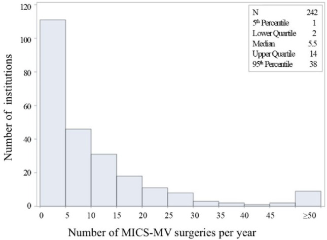
出典: Shimokawa T, Kumamaru H, Motomura N, et al. Gen Thorac Cardiovasc Surg 2026;74(5):510-517. doi:10.1007/s11748-025-02225-z / PubMed. CC BY 4.0（原図を改変せず掲載）。
エビデンス格付け（第2章）
| 技術 | E段階 | 普及の壁 | 日本での可用性 | 反証の有無 |
|---|---|---|---|---|
| 上部部分胸骨切開AVR | E4 | 20–30例 | ○ 保険適用 | あり：Cochrane で死亡・疼痛・QOLに差なし、確実性 low〜very low、費用+£1,190 |
| MIMVS（右小開胸） | E4 | 修復39例・置換78例 | ○ 保険適用 | あり：MMIR 6,878例で遮断時間が死亡と有意相関（P<0.001） |
| ロボット僧帽弁形成 | E4 | 94例・費用+$10,500 | ○ 保険適用（2,525例/年） | あり：前尖/両尖病変では10年耐久性83%（後尖92%） |
| 経腋窩AVR | E2 | 単施設由来・rapid deployment依存 | △ 術式選択の問題 | あり：新規PPM率が未報告、他系統的レビューでは脳卒中2.0–6.3% |
| ロボットAVR | E2 | 85%が単施設・遮断117分・訓練経路が重い | ○ 2024年度から保険適用 | あり：対照群なし、著者自身が比較を目的としていないと明記 |
| 小児の低侵襲開胸 | E3 | 病変が限定 | △ 実施施設限定 | 探したが見つからなかった（ECHSA 3,007例は選択施設のpooled data という限界のみ） |
🔮 私の見立て
この章は Editorial のなかで唯一「未来ではなく現在」の章である。そして日本にとっての実務的な結論は明快だ。
経腋窩AVRは、日本では急がなくてよい。 理由は3つ。①Cochraneが示したように低侵襲AVRの利益は出血量に集中し、 疼痛とQOLでは差が出ない。②Dresdenの成績は「rapid deployment弁81%＋遮断43分」という組み合わせで達成されており、 日本の弁選択（生体弁87.9%だがrapid deploymentは限定的）では再現条件が揃わない。 ③そして合併症が大腿へ移動する（創治癒不良の71.4%）。
逆に、ロボットAVRは日本で意味を持ちうる。 ただし理由はEditorialが書いた「視野・人間工学」ではない。 私が注目するのは PPM 2.8% と 弁輪拡大を10.8%で併施できたこと である。 日本人小体格でのPPM回避は当院の中心課題であり、AAE術式アトラスと 小径弁輪AVRレビューで扱ってきた 「弁輪拡大を安全にどう足すか」という問題に、ロボットは視野という別解を出している。 保険が2024年に通ったことで、この検証は日本でこそ可能になった。
ただし前提条件は厳しい。Cedars-Sinaiの94例、Badhwarの訓練経路（僧帽弁50例＋250例）を満たせない施設が始めるべきではない。 「学習曲線は成熟プログラムの中でだけ消える」というChikweの知見は、 裏返せば未成熟プログラムでは消えないという意味である。
第3章 自己弁温存とVSARR：技術は完成し、問題は普及になった
- 2025 ESC/EACTS ガイドラインで VSARR は Class I Level B に格上げされた（大動脈弁形成は IIa B）。技術としては議論が終わっている。
- しかし AVr/VSARR と弁置換を比較した無作為化試験は存在しない。これは Eur Heart J 2025 総説が明記している事実である。
- 残った問題は普及と集約。Govers の「年12例」閾値が2026年に出たが、これはガイドラインが意図的に数値を出さなかった空白を埋めるものであり、しかも De Paulis 総説の「低volume施設でも10年87%」という記述と緊張関係にある。
3.1 ガイドラインの位置づけ（一次確認）
2025 ESC/EACTS 弁膜症ガイドライン Recommendation Table 3 の該当行を原文で確認した （10.1093/ejcts/ezaf276）。
| 推奨 | Class | Level |
|---|---|---|
| Valve-sparing aortic root replacement is recommended in young patients with aortic root dilatation at experienced centres, when durable results are expected | I | B |
| AV repair should be considered in selected patients with severe AR at experienced centres, when durable results are expected | IIa | B |
| AV surgery is recommended in symptomatic patients with severe AR regardless of LV function | I | B |
| AV surgery is recommended in asymptomatic patients with severe AR and LVESD >50 mm or LVESDi >25 mm/m²（とくに BSA <1.68 m² の小体格）or resting LVEF <50% | I | B |
| TAVI may be considered for severe AR in symptomatic patients ineligible for surgery | IIb | B |
小体格（BSA <1.68 m²）への言及が Class I 行に入ったのは日本にとって重要である。 LVESDi >25 mm/m² が明示されたことで、日本人の「絶対径では基準に届かないが指数化すると超えている」症例が拾いやすくなった。
3.2 長期成績：数字を並べる
Eur Heart J 2025 の総説（De Kerchove・El Khoury・Schäfers・Michelena らが共著）から （10.1093/eurheartj/ehaf038）：
- 経験ある術者の手で院内死亡は約1%
- 10年生存 85–92%
- AR に対する再手術回避：20年 88%／12年 90%／15年 96%（各々別施設の報告）
- reimplantation 単独に絞った最大のメタ解析（44研究7,878例）で10年 再手術回避 91%
- 大動脈拡大のない TAV の cusp prolapse 修復（2つの大規模専門施設）：10年生存80%、AV再介入回避 10年79–80%・15年72–73%
- BAV に絞った大規模シリーズ：再手術回避 10年 最大91%・15年 88%。ただし TAV と BAV の比較では BAV の方が長期の AR 再発リスクが高い
比較研究（すべて後ろ向きまたは前向きコホート）：
| 研究 | デザイン | 結果 |
|---|---|---|
| Toronto | 単施設 | 心臓関連死 10年 自己弁温存 2.3% vs 機械弁Bentall 7.4% vs 生体弁Bentall 9.2% |
| Gaudino | PSM | 機械弁Bentall が再介入で優位 |
| AVIATOR（Arabkhani 2023, シードref[12]） | 多施設PSM 3:1 | 654 vs 218。5年生存 95.4% vs 85.4%（P=0.002）、5年 再介入回避 96.8% vs 95.4%（P=0.98）、血栓塞栓・心内膜炎・出血は CVG-ARR に多い（P=0.02） |
| CAVIAAR（Lansac 2022） | 多施設前向きコホート261例 | 4年 主要複合 HR 0.66（0.39–1.12）＝有意差なし。弁関連死 HR 0.09（0.02–0.34）、大出血 HR 0.37（0.16–0.85）、弁関連再手術 HR 2.10（0.64–6.96） |
| メタ解析（26研究>6,200例） | メタ | VSARR は composite valve grafting より晩期死亡・血栓塞栓・出血が有意に少ない（平均追跡約6年）。ただし総説著者は「こうしたメタ解析のバイアスリスクの評価が今後必要」と付記 |
AVIATOR を批判的に読む。 VSRR 2,005例 vs CVG-ARR 218例から3:1でPSMしたが、 追跡中央値は両群4年（IQR 1–5年）しかない。その4年で5年生存に10ポイント差（95.4% vs 85.4%）がつく一方、 再介入には差がない（P=0.98）。自己弁温存の機序で生存が10%変わるなら、それは弁関連イベント経由であるべきだが、 再介入は同等である。したがって残余交絡（CVG-ARR群に選ばれた理由＝より悪い解剖・より高い併存疾患）を強く疑うべきで、 この生存差をそのまま「自己弁温存の効果」と読むのは危険である。
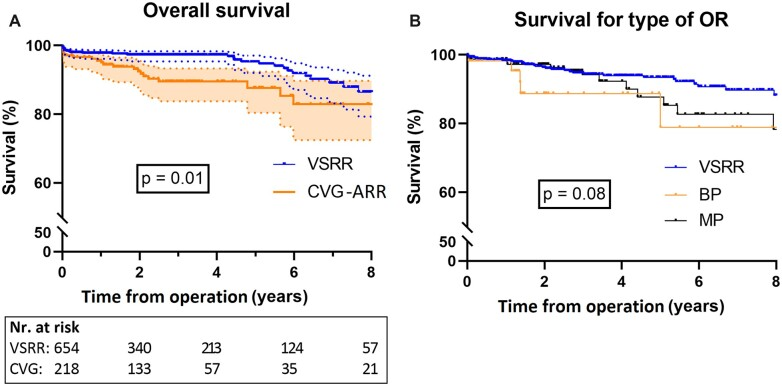
出典: Arabkhani B, Klautz RJM, de Heer F, et al. Eur J Cardiothorac Surg 2023;63(2):ezac514. doi:10.1093/ejcts/ezac514 / PubMed. CC BY-NC 4.0（原図を改変せず掲載）。
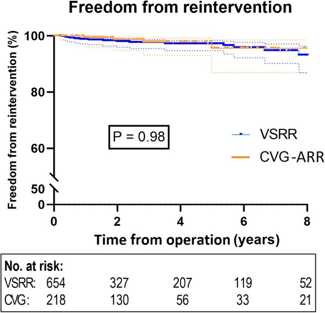
出典: Arabkhani B, Klautz RJM, de Heer F, et al. Eur J Cardiothorac Surg 2023;63(2):ezac514. doi:10.1093/ejcts/ezac514 / PubMed. CC BY-NC 4.0（原図を改変せず掲載）。
Reimplantation vs remodelling。 Sá らのKaplan-Meier再構築メタ解析（15研究3,044例： reimplantation 1,991 vs remodelling 2,018）では、remodelling は全死亡 HR 1.54（1.16–2.03）、 AV/基部再介入 HR 1.49（1.07–2.07）。ただし生存差は landmark 4年以内に限局し、 4年以降は HR 1.04（0.72–1.50, P=0.822）（10.1016/j.athoracsur.2023.08.018）。 一方 Schäfers 群の remodelling 1,156例（1995–2021、追跡6.7±5.5年・7,746患者年）では 15年生存74.7%、15年 弁関連合併症回避66.8% と良好で、 唯一の有意な調整済み予測因子は年齢（ROC最適カットオフ61歳）だった。 61歳未満の15年生存87.1% に対し61歳超は55.3%（P<0.0001） （10.1016/j.jtcvs.2023.08.055）。 → 術式差（reimplantation vs remodelling）よりも術者効果と年齢の方が大きい、と読むのが妥当である。
Marfan/Loeys-Dietz。 大西洋横断レジストリ188例（MFS 158/LDS 30）では、 AV再手術回避 10年 MFS 94%・LDS 87%、AR≥2 は11%。 そして Valsalva graft 使用群は大動脈再介入が有意に少なかった（HR 0.04, P<0.001） （10.1016/j.athoracsur.2025.07.025）。 Editorial が器具[13]として挙げた Valsalva graft は、20年後にこういう形で裏取りされた。
3.3 「年12例」問題 — ガイドラインが空けた穴を誰が埋めるか
2026年7月号 EJCTS の Govers ら（Heart Valve Society AV データベース、待機的VSARR 2,668例・37施設）は、 EuroSCORE II 調整・制限付き三次スプライン＋elbow法で volume-outcome 関係を解析した （10.1093/ejcts/ezag177）。
- 早期複合アウトカム（30日死亡・血栓塞栓・再介入・術中conversion・AR≥2度）は 年間症例数と関連しない（P=.8003）
- 長期の AV 再介入回避生存には有意な非線形関係があり、年12例以上（95%CI 10–12）の施設で良好（P=.0023、感度分析でP<.0001）
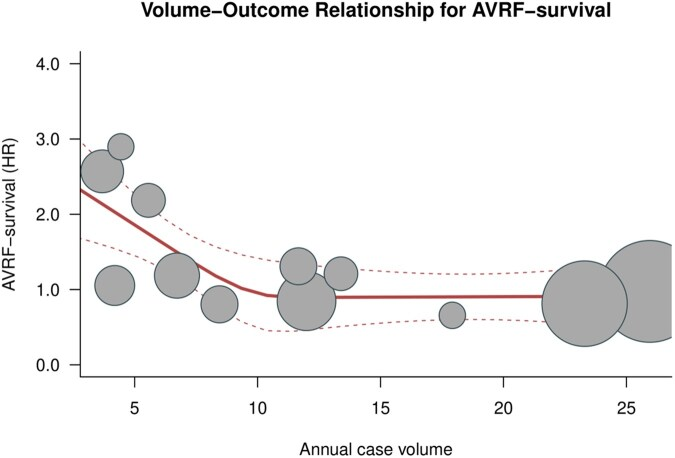
出典: Govers PJ, et al. Eur J Cardiothorac Surg 2026;68(6):ezag177. doi:10.1093/ejcts/ezag177 / PubMed. CC BY 4.0（原図を改変せず掲載）。
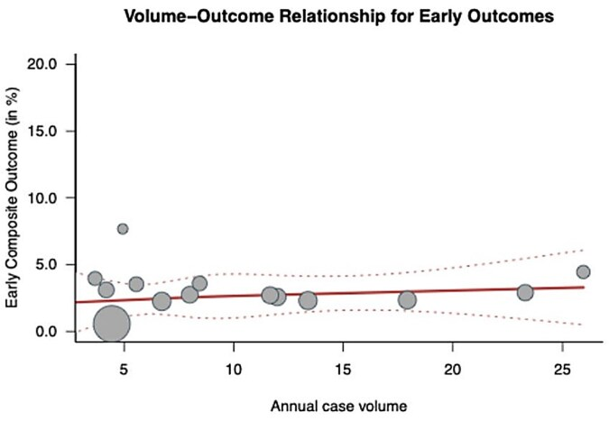
出典: Govers PJ, et al. Eur J Cardiothorac Surg 2026;68(6):ezag177. doi:10.1093/ejcts/ezag177 / PubMed. CC BY 4.0（原図を改変せず掲載）。
この論文の意義は、2025 ESC/EACTS ガイドラインが意図的に数値を出さなかった空白を埋めている点にある。 ガイドライン§3.1.2 を原文で確認すると、僧帽弁手術（術者年25例）・TAVI（術者50例・施設100例）・ M-TEER（累積50例）・T-TEER（施設年20例超）には具体的数値を挙げているが、 「institutional または operator の正確な必要件数について推奨を出すことは困難」として AVR・基部手術には数値を与えず、「国や地域ごとの四分位に基づくネットワーク型アプローチ」を提案している。 つまり Govers の12例は、ガイドラインが空けた唯一の穴に入った数字である。
ただし緊張がある。De Paulis 総説は 「低い年間volumeの施設からの報告でも、成績はわずかに劣るだけ（例：10年 再手術回避生存 87%）であり、 慎重な患者選択があれば教育施設でも良好な長期成績が得られる」 と書いている。 Govers（長期耐久性に差が出る）と De Paulis（低volumeでも87%）は、 同じ現象の「差の大きさをどう評価するか」で分かれている。
私の読み方は次の通り。Govers の設計は 早期成績が「イベント率が低すぎて症例数に鈍感」 であることを示した点が本質で、 これは低侵襲・ロボットの学習曲線論（第2章）と構造が同じである。 安全性で差が出ないから安心してよい、のではなく、安全性では差が検出できないから耐久性で見るしかない。
3.4 器具と補助手段：Editorial の[13]〜[19]を1本ずつ検証する
| Editorial の器具 | 原典 | 2025–2026年時点の評価 |
|---|---|---|
| Valsalva graft（[13] De Paulis 2005） | MMCTS 2005;2005:mmcts.2004.000992 | 支持。Marfan/LDS 188例で大動脈再介入 HR 0.04（P<0.001）。De Paulis 総説 Table 1 でも「根部の解剖と機能を再現する tube graft」として2000年の起点に置かれている |
| geometric calliper（[14] Schäfers 2006） | 10.1016/j.jtcvs.2006.04.032 | 支持。effective height を測る道具として定着。De Paulis 総説 Table 4 は術後 eH >9mm・coaptation length >4mm・術前 gH >17mm（TAV）/>20mm（BAV）・BAV commissural orientation >140°（≥160°ならより良い） を修復成功の予測因子として明示した |
| 外部リング（[15] Lansac 2010） | 10.1016/j.jtcvs.2010.08.004 | 条件付き支持。CAVIAAR で弁関連死・大出血は有意に減ったが主要複合は有意差なし。De Paulis 総説は「最も頻用される手技」としつつ「十分な根部外周の剥離が必要」 |
| El Khoury 機能分類（[16] 2005） | 10.1097/01.hco.0000153951.31887.a6 | 支持。De Paulis 総説の骨格そのもの（Carpentier の僧帽弁分類に相当） |
| 術中加圧可視化device（[17] Arabkhani 2023） | 10.1093/ejcts/ezad291 | E1。24例中22例で術後AI ≤grade 1、漏れ中央値90 mL/分（IQR 60–120）。3例で追加調整、2例で弁置換（残存AI 330・260 mL/分）。単群・n=24・対照なし。かつシードEditorialの責任著者自身の開発品が同Editorialの推奨に含まれている点はCOIとして読者に開示されるべき |
| HAART（[18] Rankin 2010） | — | 第4章で単独に扱う |
| De Paulis 総説（[19] 2025） | 10.1093/eurheartj/ehaf038 | 本章の一次資料。「AVr/VSARRと弁置換を比較したRCTは存在しない」と明記 |
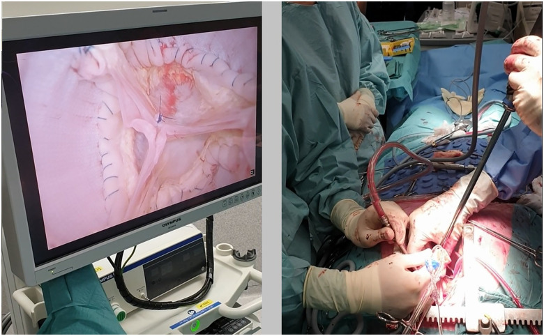
出典: Arabkhani B, Sandker SC, Braun J, et al. Eur J Cardiothorac Surg 2023;64(5):ezad291. doi:10.1093/ejcts/ezad291 / PubMed. CC BY 4.0（原図を改変せず掲載）。
さらに De Paulis 総説からは、Editorial に書かれていない2つの重要な実務情報が得られた。
- subcommissural 縫合は「術後の進行性弁輪拡大とそれに伴う修復失敗のため、ほぼ完全に放棄された」。 弁輪径 >25mm を拡大と定義し、弁輪の安定化/縮小が耐久性を有意に改善する。
- AVr/VSARR 後の抗血栓療法について ESC/EACTS ガイドラインには記載がなく、 「国際的な慣行（common international standard）は生涯低用量アスピリン」 である。 これはガイドラインの明示的な空白であり、施設プロトコルを書く側にとって重要な情報である。
エビデンス格付け（第3章）
| 技術 | E段階 | 普及の壁 | 日本での可用性 | 反証の有無 |
|---|---|---|---|---|
| VSARR（reimplantation） | E4（2025 GL Class I B） | 年12例/年（Govers）・学習曲線 | ○ 保険適用。ただし日本の大動脈弁形成は年173例＝全AV手術の1.6% | あり：①AVIATOR の生存差10%は追跡4年での残余交絡を疑うべき（再介入は同等）②61歳超では15年生存55.3% ③弁置換との RCT が存在しない |
| VSARR（remodelling） | E4 | 同上 | ○ | あり：メタで死亡HR 1.54・再介入HR 1.49（ただし差は4年以内に限局し、Schäfers群では15年66.8%と良好＝術者効果が交絡） |
| 外部リング弁輪形成 | E3 | 根部外周の剥離が必要 | △ リング製品は国内未承認（Teflon felt等で代替） | あり：CAVIAAR の主要複合は有意差なし（HR 0.66, 0.39–1.12）、再手術は数値上2.10倍 |
| Valsalva graft | E3 | なし | ○ 使用可 | 探したが見つからなかった（Marfan/LDSでHR 0.04と強い支持） |
| geometric calliper / El Khoury分類 | E4（総説・GLの骨格） | 教育 | ○ | 探したが見つからなかった |
| 術中加圧可視化device | E1 | 未承認・n=24 | × 国内未承認 | 探したが見つからなかった（対照なしのため反証も存在しない。COIあり） |
🔮 私の見立て
技術論はもう終わっている。 VSARR が Class I になり、20年の再手術回避が88%あり、 reimplantation のメタ解析が7,878例に達した以上、「David をやるべきか」はもはや問いではない。
私が本当の論点だと考えるのは 「年12例」を日本地図に重ねたときに何が起きるか である。 日本の大動脈弁形成は 2020年に全国で173例（全大動脈弁手術の1.6%） しかない （10.1007/s11748-023-01979-8）。 VSARR はこれとは別カウントだが、桁の感覚は同じである。 年12例を満たせる施設は、日本には数施設しかない可能性が高い。 つまり Govers の閾値を真面目に適用すると、日本における結論は 「各施設が頑張って12例に到達する」ではなく 「12例を出せる施設に送る」 になる。
これは当院にとって不都合な結論だが、そのまま受け取るべきだと考える。 ただし条件が1つある。De Paulis 総説の「低volumeでも10年87%」という記述は、 「慎重な患者選択があれば」 という前置き付きである。 逆に言えば、低volume施設が取るべき戦略は「症例数を追う」ことではなく 「送る症例と自分でやる症例を明示的に分ける基準を持つ」 ことになる。 その基準として De Paulis Table 4 は使える：術前 gH >17mm（TAV）/>20mm（BAV）、 BAV commissural orientation ≥160°、術後 eH >9mm・coaptation >4mm を満たせない解剖は送る。 これは第10章の実行計画に落とす。
第4章 大動脈弁形成のデバイス：HAARTは何を教えたか
- 本 Editorial の最大の弱点はここである。HAART（内側幾何学的弁輪リング）を推奨側に置いているが、同一著者群が同時期の Eur Heart J 総説では失敗機序を明示している。
- そこへ 2026年7月号 JTCVS：18例中7例（44%）が再介入、5年推定再介入率 40.8% が出た。摘出時、弁輪径は植込み前サイズに戻っていた。
- ただし「HAARTは失敗した」と結論するのは早い。規制試験65例では3年で10.8%、単施設43例では平均2.7年で4.7%であり、症例数が二桁の報告が散らばっているだけである。決着は CONTOUR trial（HAART 200 vs 二重外部リングのRCT, NCT06869954） が付ける。
4.1 HAART の規制上の根拠は、実は約106例しかない
ClinicalTrials.gov を洗うと、HAART の規制試験は3つだった。
| 試験 | 対象 | n | 期間 |
|---|---|---|---|
| NCT01400841 | HAART Model 300 Annuloplasty Ring | 18 | 2012-01–2013-04 |
| NCT01732835 | HAART 300 Extended Safety and Performance | 68 | 2012-12–2014-06 |
| NCT02071849 | HAART 200 Aortic Valve Annuloplasty Trial（二尖弁用） | 20 | 2013-09–2015-04 |
合計約106例。これで市販化されている。 公表された成績は次の通り。
- Mazzitelli 2016（EJCTS、NCT01400841ベース、65例）: 平均年齢63±13歳、 三尖弁の中等度〜重症AI。弁輪径 術前26.5±2.3mm→リング平均21.5±1.6mm。 院内死亡・重大合併症なし。AI grade 2.9±0.8→0.6±0.7（P<0.0001）、平均圧較差8.6±4.3mmHg、 3年生存95%。しかし3年間で7例（10.8%）が大動脈弁置換を要した。 著者は「失敗はほとんどが早期で、6か月以降は安定」「失敗は主に手技的要因」と述べた （10.1093/ejcts/ezv234）。
- Rankin 2018（Innovations、47例、大動脈瘤手術に併施）: 弁輪径26.5±2.6mm→リング21.7±1.7mm、 平均追跡27か月。手術死亡・弁関連合併症なし、修復失敗による弁置換1例、 2年の合併症/弁置換なし生存94%（10.1097/IMI.0000000000000539）。
- Lancaster 2023（JTCVS、小児/成人先天性36例、Michigan）: 年齢中央値17.4歳、 手術死亡0%、主要合併症6%、追跡中央値1.9年で再手術回避97%、≥3+ AI 回避94% （10.1016/j.jtcvs.2022.10.017）。
- Papakonstantinou 2025（Hellenic J Cardiol、単施設43例）: 平均追跡2.7年（最長6.3年）、 死亡2.3%、リング関連の有害事象で再手術2例（4.7%）、中期で軽度以下のAI。 ただし中等度ASが16%に存在（10.1016/j.hjc.2025.01.007）。
4.2 Yokoyama/Fukuhara 2026：44%が再介入
2026年7月号 JTCVS、University of Michigan（10.1016/j.jtcvs.2026.03.573）。
- 対象：2017-01–2025-05 に内側幾何学的弁輪リングで大動脈弁形成を行った成人17例・18手術 （平均54±15歳、男性16、三尖弁14/二尖弁2/単尖弁1、redo repair 1）
- 10手術（56%）で基部 remodeling を併施、21mm 三尖弁用リングが61%
- 平均追跡3.7±1.7年で 7例（44%）に8回の再介入（重症AI 7、心内膜炎＋中等度AI 1）
- 5年推定再介入率 40.8%（95%CI 20.0–70.5）
- 再介入の内容：SAVR 5、redo内側リング1、基部置換1、valve-in-ring TAVR 1
- 外科的に摘出した症例では、弁輪径がリング植込み前のサイズに一致して戻っていた
- 結論：「弁輪縮小には有効だが、リングの剛性のある intra-annular 設計と過度の弁輪 downsizing が AI 再発を招き、将来のカテーテル治療の選択肢を制限しうる。広範な適用には慎重な検討を要する」
この論文をどう位置づけるか。 n=17 は小さく、95%CI は20.0–70.5%と広い。 単一施設・単一術者群のバイアスも当然ある。 しかし 「摘出時に弁輪径が元に戻っていた」 という観察は症例数に依存しない機序の証拠であり、 「剛性リングで弁輪を縮めても、縮んだ状態が維持されない」ことを示している。 これは Mazzitelli の「失敗はほとんど早期」という説明とも実は整合する （早期に戻ってしまうなら、失敗は早期に出る）。
4.3 決定的な指摘：同じ著者群が、同じ年に、反対のことを書いている
ここが本プロジェクトで最も重要な発見である。
シード Editorial（EJCTS 2026;68(6):ezag185）は、器具のリストの中に 「非拡大基部への HAART annuloplasty」を推奨の文脈で置いている。 著者には De Kerchove（Saint-Luc）と De Paulis（Rome） が含まれる。
一方、De Paulis らの Eur Heart J 2025 総説（第一著者 De Paulis、共著に de Kerchove、El Khoury、Schäfers）は、 弁輪形成の4つの概念を列挙した中で内側リングをこう記述している （10.1093/eurheartj/ehaf038）。
(3) Some Authors proposed an internal annuloplasty, with a rigid ring implanted below the cusp insertion. Results have been published with limited numbers and follow-up; early failures have been related to abrasion of cusp tissue or ring dehiscence.
つまり 「限られた症例数と追跡でしか報告がなく、早期の失敗は cusp 組織の摩耗またはリングの dehiscence に関連する」。 これは Yokoyama の報告より1年早く、同じ著者群が公表していた評価である。
さらに Augsburg の Girdauskas らは2024年に、 「原法の実装で一般的な合併症を避けるため」として HAART 200 のループ縫合を外部固定する改変法を発表している （10.1093/ejcts/ezae350）。 「一般的な合併症（common complications associated with the original implantation technique）」という表現は、 臨床現場が既に問題を認識していたことを示す。
4.4 決着は RCT が付ける：CONTOUR trial
同じ Girdauskas らが2025年に公表した CONTOUR trial のプロトコルは、 この論争を直接の比較試験にした（10.1093/ejcts/ezaf360、NCT06869954）。
- 多施設RCT、非対称配置の二尖弁AR患者100例を1:1に無作為化
- INTERNAL群：HAART 200 内側リング vs EXTERNAL群：Extra Aortic ring による二重外部弁輪形成
- 4D-flow MRI を術前・退院時・1年で撮り、core lab の評価者盲検で flow eccentricity と逆流率を判定
- 階層的な2つの主要エンドポイント：①退院時の flow eccentricity の減少 ②1年の逆流率(%)
- 2025-05 開始、2027-06 primary completion
- 共著者に Lansac（外部リングの創始者）が入っている
内側派と外部派が同じプロトコルの上で直接対決するという構図で、 弁輪形成のRCTとしては史上初である。本レビューの結論も、2027年にはここで更新される。
4.5 「デバイスで再現性を上げる」戦略の限界
HAART の設計思想は明快だった。「大動脈弁形成は術者依存で再現性が低い。 弁輪の三次元形状を規定するリングを入れれば、誰でも同じ形が作れる」。 僧帽弁における Carpentier リングの成功を、大動脈弁に移そうとした発想である。
なぜそれが僧帽弁のようにいかなかったのか。少なくとも3つの理由が挙がる。
- 大動脈弁輪は「輪」ではない。 De Paulis 総説が Figure 1 で示すように、 大動脈弁装置は「2つの輪（上のSTJと下のvirtual basal ring）を3本の commissural post が繋いだ円筒」である。 下の輪だけを剛性リングで固定しても、上の輪と post の関係は規定されない。
- cusp が動く場所にリングがある。 内側（intra-annular）配置は cusp 挿入部の直下であり、 Yokoyama も De Paulis 総説も cusp 組織の摩耗（abrasion） を失敗機序に挙げている。 僧帽弁リングは血流に晒される面が少ないが、大動脈内側リングは違う。
- 過度の downsizing。 Yokoyama コホートでは 21mm リングが61%だった。 弁輪を小さくすれば coaptation は取れるが、将来の ViV の余地を失う。 これは 小径弁輪AVRレビュー で扱った 「PPMと lifetime management のトレードオフ」がそのまま形成手術に現れた形である。
エビデンス格付け（第4章）
| 技術 | E段階 | 普及の壁 | 日本での可用性 | 反証の有無 |
|---|---|---|---|---|
| 内側幾何学的リング（HAART） | E2（規制根拠は約106例） | 剛性設計・downsizing・ViVの制限 | × 国内未承認 | あり（最重要）：①Michigan 18例で44%再介入・5年40.8%、摘出時に弁輪径が元に戻る ②De Paulis 2025 EHJ（同一著者群）が「早期失敗は cusp摩耗またはリングdehiscence」と記述 ③Girdauskas が原法の「一般的な合併症」回避のための外部固定法を発表 ④CONTOUR trial で外部リングとRCT比較中 |
| 外部リング（二重/Extra Aortic） | E3 | 剥離量 | △ 国内未承認 | あり：CAVIAAR 主要複合は有意差なし |
| subcommissural 縫合 | E5→放棄 | — | ○（技術のみ） | あり：De Paulis 総説「術後の進行性弁輪拡大によりほぼ完全に放棄された」 |
| 基部 remodeling ＋ cusp effective height 再懸垂 | E3 | 教育 | ○ | Lansac 2010 の3群比較で group 3（自由縁整列＋eH再懸垂）は1年イベント0% vs group 1 28.1%（P<.001） |
🔮 私の見立て
HAART は「デバイスで再現性を買う」という戦略が、大動脈弁では成立しなかった事例として記録されるべきだと考える。 ただしそれは「HAARTが悪い製品だった」という話ではなく、弁輪という構造の理解が足りないまま剛性体を入れたという話である。
実務的には、当院の判断は次のようになる。
- 国内未承認なので、今すぐの意思決定は不要。これは幸運である。
- 仮に将来承認されても、CONTOUR trial（2027年primary completion）の結果を待つ。 n=100 のRCTで4D-flow MRI を core lab 盲検判定する設計は、この分野で最も信頼できるデータになる。
- より一般的な教訓を先に取る。 すなわち 「約100例の規制試験で市販された弁輪デバイスは、 市販後に二桁の単施設報告が散らばる段階を経て、10年目に評価が固まる」 というタイムラインである。 第9章の「新技術評価チェックリスト」にこれを組み込む。
そして最も重要な観察を繰り返しておく。 同じ著者群が、同じ年に、Editorial では推奨し、総説では失敗機序を書いている。 これは誰かの不誠実ではなく、「Editorial という文書形式が、留保を落とす」 ということだと思う。 学会委員会の意見表明を読むときの実務的な教訓として、これは HAART そのものより価値がある。
第5章 Ross手術の復権 — エビデンスは強く、推奨は弱い
- Ross のエビデンスは Editorial が示唆するより強い。RCT post hoc で25年生存83.0%＝相対生存99.1%、PSM 1:1:1 で15年生存93.1%＝一般人口同等。
- しかし 2025 ESC/EACTS ガイドラインは Ross に独立した推奨行（Class/Level）を与えていない。本文で「15年で15%が再介入」と述べるだけである。
- 2026年に EACTS Expert Consensus Statement on the Ross Procedure in Adult Patients が出て、この乖離を正面から指摘した：「アクセスの乏しさが、ガイドライン文書が Ross をより強く推奨してこなかった理由として挙げられてきた」。
5.1 エビデンスの現在地
| 研究 | デザイン | 主要結果 |
|---|---|---|
| El-Hamamsy 2022 JACC（10.1016/j.jacc.2021.11.057） | California/NY 州データ、18–50歳、PSM 1:1:1（各434例）、追跡中央値12.5年 | 15年 actuarial生存 Ross 93.1%（89.1–95.7）＝年齢・性・人種一致の米国一般人口と同等。生体弁 HR 0.42（0.23–0.75, P=0.003）、機械弁 HR 0.45（0.26–0.79, P=0.006）。生体弁より再介入・心内膜炎が少なく（P=0.008/0.01）、機械弁より再手術は多いが（P<0.001）脳卒中（P=0.03）・大出血（P=0.016）は少ない |
| Notenboom 2024 JAMA Cardiol（10.1001/jamacardio.2023.4090） | RCT（Ross vs homograft, 1994–2001）の post hoc、108例、追跡中央値24.1年（98%完全） | 25年生存 83.0%（75.5–91.2）＝相対生存99.1%。25年 再介入回避 71.1%、自家弁再介入回避 80.3%、homograft再介入回避 86.3%。周術期死亡0.9%（1例）。初回Ross関連再介入後の30日死亡0%、全再介入で3.8%、再手術後10年生存96.2% |
| Yokoyama 2023 JAHA（10.1161/JAHA.122.027715） | ネットワークメタ解析（2 RCT＋8 PSM、4,812例） | 全死亡 Ross vs 機械弁 HR 0.58（0.35–0.97）、vs 生体弁 HR 0.32（0.18–0.59）。再介入は機械弁より多く生体弁より少ない。大出血・脳卒中は機械弁より少ない |
| Shetty 2026 ATS（10.1016/j.athoracsur.2025.08.045） | インド単施設252例（平均19.6歳）、2001–2023 | 早期死亡1.6%、10年 全死亡回避94.3%・Ross関連再介入回避89%。手製Dacron valved conduit（n=75）は肺homograft（n=176）と同等（RVOT平均圧較差17.5 vs 16.5mmHg, P=.75） |
| Sarnaik 2024 JTCVS Open（10.1016/j.xjon.2023.10.033） | 18歳を想定した Markov 決定木・20,000回 Monte Carlo | 20年死亡 Ross 16.3% vs 機械弁23.2%。生涯（術後60年）QALY 28.3 vs 23.5、費用 **$54,233 vs 507, 240 * *。機械弁は1QALYあたり95,345 高い |
| Notenboom 2023 EHJ（10.1093/eurheartj/ehad370） | 小児AVR のメタ解析＋microsimulation（68研究5,259例） | 早期死亡 Ross 3.7% vs 機械弁7.0% vs homograft 10.6%。20年内の平均余命 Ross 18.9年（相対94.8%）vs 機械弁17.0年（86.3%）。20年 AV再介入リスクは Ross 42.0% vs 機械弁17.8% |
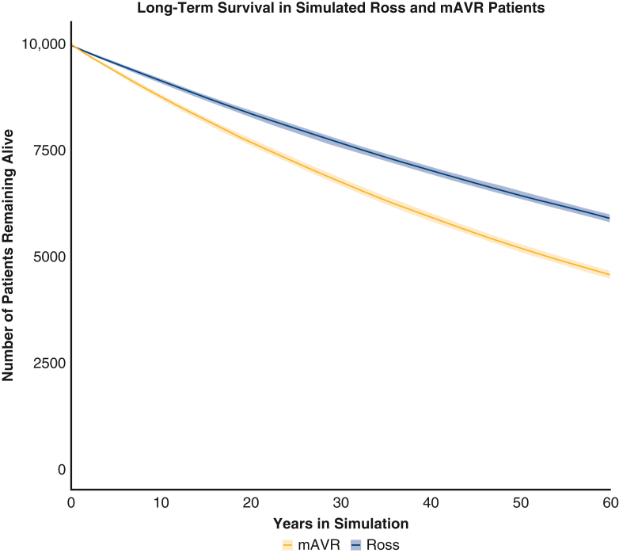
出典: Sarnaik KS, et al. JTCVS Open 2024;17:185-214. doi:10.1016/j.xjon.2023.10.033 / PubMed. CC BY-NC-ND 4.0（原図を改変せず掲載）。
5.2 ガイドラインとの乖離を原文で確認する
2025 ESC/EACTS ガイドラインを全文検索した結果、Ross に独立した Recommendation 行は存在しない。 記述は3か所の本文のみである（10.1093/ejcts/ezaf276）。
- §8（大動脈弁）: 「Ross 手術は、選択された患者に高い専門性を持つ施設で行われた場合、 優れた長期生存と関連する。抗凝固が望ましくない/禁忌である予後の長い若年患者では価値ある外科的選択肢だが、 手技の複雑さと、15年以内に15%の患者で再介入が必要になることを伴う」
- §14（人工弁選択）: 「自家弁を用いた大動脈弁置換（Ross手術）は若年患者において機械弁の代替であり、 専門施設で専任の専門性を持つ術者により行われるべきである」
- §16（妊娠）: 「Ross 手術は、専門性を持つ施設において考慮されうる（may be considered）」
Class も Level も付与されていない。 これに対して VSARR は Class I Level B である（第3章）。 つまり 2025年のガイドラインは、自己弁温存には最高格を与え、自家弁（Ross）には推奨行すら与えなかった。
5.3 EACTS Expert Consensus 2026 は何を言ったか
Vojacek らの EACTS Expert Consensus Statement（EJCTS 2026;68(2):ezaf295、 共著に El-Hamamsy、Bavaria、de Kerchove、Ouzounian、Takkenberg、Skillington ら）は、 systematic review に基づく6つの Consensus Statement Table を出した （10.1093/ejcts/ezaf295）。要点を抽出する。
Table 1 根拠：長期の平均余命を年齢・性一致の一般人口レベルに回復させる／ すべての人工弁選択肢より優れた血行動態／心内膜炎・PPM（patient-prosthesis mismatch）の回避、 生体弁より再手術回避、機械弁より血栓塞栓・出血回避が良好。
Table 2 患者選択：
- 60歳未満・併存疾患が少ない成人で shared decision-making を経て考慮する
- 妊娠可能年齢の女性でAVRが必要な場合は Ross が第一選択
- 冠動脈起始異常は慎重に
- 最適適応は AS または狭窄優位の混合病変、とくに弁輪非拡大例
- 純AR で AVr 不適なら、適切な手技を用いれば良い候補
- リウマチ性・感染性心内膜炎でも選択例では考慮可
- Marfan など遺伝学的に確定した症候性大動脈症では避ける
- 自己免疫疾患では避ける（ただし絶対禁忌ではなく、PET-CTで活動性を除外し休止期なら可）
Table 3 手技：tailored free-standing root replacement／native inclusion／prosthetic inclusion が最適。 純/優位ARまたは弁輪≥27mm、あるいは大動脈−肺動脈弁輪径のミスマッチがある全例で annuloplasty を行う。 右心系再建は凍結保存肺homograftがgold standard、xenograft は代替だが耐久性は劣る。 脱細胞化（新鮮または凍結保存）homograft は標準homograftより耐久性が良い可能性がある。
Table 5 術後管理：術後1年間の厳密な血圧管理／術後3–6か月の経口抗炎症薬が肺homograft失敗リスクを減らしうる／ 生涯の臨床・心エコー追跡は必須。homograft失敗リスクは二相性で初年度3.5%→以後1%/年。
Table 6 集約化：術者・施設レベルで強い正の volume-outcome 関係がある。 Ross Centres of Excellence（症例数・手術死亡・早期の臨床/心エコー成績・縦断追跡で定義）で提供すべき。 本文では 「低volume施設で行われた場合、Ross の周術期死亡は AVR の3倍」、 学習曲線は約75例で合併症リスクが最小化と明記されている。
そして最も重要な一文：
Lack of easy access to the Ross procedure has been cited as a reason why international guideline documents have not more strongly recommended the Ross procedure despite the overwhelming evidence supporting it.
「アクセスの乏しさが、圧倒的なエビデンスがあるにもかかわらずガイドラインが Ross をより強く推奨してこなかった理由として挙げられてきた」。 これは技術の問題ではなく供給体制の問題であるという自己診断である。
5.4 反証を探す：Ross に不利なデータ
- 補強法を間違えると害になる。 Toronto（SickKids/UHN）の12歳以上131例では、 autograft support 別に3群比較して、full support（自家弁をストレートDacron graft内に留置）群は 10年で中等度以上の自家弁AR が32.3%（annular support 13.3%、no support 11.1%、P=0.03）。 再手術累積は3群で差なし（5.6/0/10.1%, P=.80）、10年生存99% （10.1093/ejcts/ezag019）。 一方で16研究（補強Ross 2,514例 vs 非補強595例）のpatient-levelメタ解析では補強Rossの方が生存も自家弁再手術回避も良好 （15年 98.8% vs 82.6%、HR 11.9, P=.016／86.6% vs 77.7%, HR 2.06, P<.001） （10.1016/j.jtcvs.2025.08.049）。 「補強すべきか」ではなく「どう補強するか」で結果が反転する。
- 右心系は解決していない。 Canadian Ross Registry 466例（平均47±12歳、 脱細胞化凍結保存肺homograft = SynerGraft使用）では、6年で肺homograft dysfunction 累積 11±2%、 93%が狭窄で59%が conduit 部。再介入は6年で3±1%だが、 リスクは術後1年目が最大（3.5%/年）、45歳未満が唯一の独立危険因子（HR 3.1） （10.1016/j.jtcvs.2020.06.139）。
- 小児では再介入が多い。 前掲 microsimulation で 20年 AV再介入リスクは Ross 42.0% vs 機械弁17.8%。
- RCT は n=43 のパイロットしかない。 ROVAL（NCT03798782, Population Health Research Institute）は 43例で COMPLETED、併走レジストリ（NCT03894787）が62例。 「overwhelming evidence」の中核はRCTではなくPSMと単一RCTのpost hocである。
エビデンス格付け（第5章）
| 技術 | E段階 | 普及の壁 | 日本での可用性 | 反証の有無 |
|---|---|---|---|---|
| Ross手術（成人） | E4（RCT post hoc＋PSM＋NMA＋EACTS consensus 2026） | 低volumeで死亡3倍・学習曲線約75例・homograft入手性 | △ 制度は整っている・供給が律速（ホモグラフトは2016年4月に保険収載＝K939-6 凍結保存同種組織加算 81,610点。認定組織バンクとの契約で施設基準を満たせば実施可。ただし国内の組織提供数は年間約10例）。JATS 2020の先天性Rossは16例 | あり：①full support で10年 自家弁AR 32.3% ②脱細胞化homograft使用でも6年 dysfunction 11% ③小児20年 再介入42.0% ④RCTはn=43のパイロットのみ ⑤2025 GLは推奨行を与えていない |
| Ross の右心系再建（凍結保存肺homograft） | E4（consensus で gold standard） | homograft供給 | △ 保険収載済（K939-6, 2016年4月）・供給が律速 | あり：初年度3.5%の失敗率、45歳未満でHR 3.1 |
| Ross の autograft 補強 | E3 | 手技選択 | — | あり：メタでは補強有利だが、Toronto では full support が10年AR 32.3%＝補強の種類で反転 |
🔮 私の見立て
Ross は「エビデンスが強いのに実施されない技術」の教科書的事例であり、 その理由は技術でも規制でもなく homograft のサプライチェーンである。
日本の制約は、償還ではなく供給である。ここは当初、私が制度を誤って把握していた点なので明示する。 ホモグラフト移植は 2016年4月の診療報酬改定で保険収載済み（K939-6 凍結保存同種組織加算 81,610点）であり、 患者の自己負担は生じない。実施施設も東大・国循に限られない ——施設基準は「日本組織移植学会の認定する組織バンクを有していること。当該バンクを有していない場合は、 当該バンクを有する保険医療機関とあらかじめ…契約を有していること」であり、契約すれば届出できる。 算定対象手術には K555（弁置換術）に加え K570、K580〜K587（ファロー四徴症・大血管転位症・ラステリ手術等）が 明記されており、Ross の右心系再建に使う肺動脈弁ホモグラフトはまさに算定対象である。
残る障壁は一つだけで、それが決定的である。国内のホモグラフト提供数が年間約10例しかない。 東大組織バンクの提供実績は1998年から2024年末までで264例＝年平均約10例であり、 国循も2026年6月に「提供数が年間約10例と不足しており、治療機会の制約となっている」と明言している。 EACTS consensus の言う「Ross Centres of Excellence」を日本に作るとき、 解くべきは償還交渉ではなく臓器移植コーディネーターとの連携と提供施設の拡大である。 手術手技の議論より2段手前の問題であることは変わらないが、手前にあるものの正体が違う。
ただし2つ、実務的に取れる行動がある。
- Shetty 2026 の手製 Dacron valved conduit（n=75）が homograft と同等だったという報告は、 homograft 供給が制約になる国での回避路として重要である。インドの単施設報告であり E2 だが、 「homograft がないから Ross ができない」という前提を崩しうる唯一のデータとして追跡すべきである。
- 妊娠可能年齢の女性で AVR が必要な症例は、Ross を提示できる施設に紹介する経路を持つ。 EACTS consensus が「第一選択」と書いた唯一の集団であり、 ここで機械弁を入れることの生涯コスト（Sarnaik の $507,240 と 4.8 QALY の差）は無視できない。
なお 2025年ガイドラインが Ross に推奨行を与えなかったこと自体は、私は妥当だと考える。 「圧倒的なエビデンス」の中核が PSM と単一RCTの post hoc であり、 かつ低volume施設で死亡が3倍になる技術に Class I を与えれば、 準備のない施設が始めて害が出る。アクセスの問題を推奨の格上げで解こうとするのは順序が逆である。
第6章 脱細胞化homograft：最も臨床に近い「living valve」が、20年目に見せたもの
- Editorial の「脱細胞化homograftが in situ 組織再生で最も先行している」は位置づけとしては正しい。20年追跡・多施設前向き試験・大規模レジストリが揃う唯一の living valve であり E3。
- しかし20年データが示したのは再生ではなく劣化である。肺位310例で 圧較差≥50mmHg 回避は15年68.3%→20年0%、≥中等度PR回避は15年65.1%→20年0%。大動脈位レジストリでは 再手術回避が5年92.4%→10年69.5%。
- 最も重い証拠は著者自身の言葉である。「現行の DAH の成績は当初の期待に達しておらず、完全な統合はこれまで確実には達成されていない」。そして機械弁 vs Ross vs DAH のRCT申請は欧州委員会で不採択となった。
6.1 用語の整理 — 「ホモグラフト」は4種類ある
この章に入る前に、片づけておかなければならない混乱がある。 「脱細胞化ホモグラフト」という語が指すものは1つではない。 文献を並べると、4つの別物が同じ名前で語られている。区別しないまま読むと、 6.2以降の20年データと、それに反する報告が、同じ技術の話に見えてしまう。
| 細胞 | 保存法 | 由来 | 代表 | 成績の要点 | |
|---|---|---|---|---|---|
| ① 標準凍結保存ホモグラフト | ドナー細胞が残る | 液体窒素 −196°C | ヒト | CH / SCA。日本の組織バンク供給品はこれ | 肺位10年 explant回避 82±6%／大動脈位210例で再手術 32.8% |
| ② 脱細胞化＋凍結保存の同種弁 | 除去 | 凍結 | ヒト | CryoValve SG（CryoLife SynerGraft、2000年臨床導入） | 中期は①より良好：dysfunction回避 74% vs 52%（P=.05） |
| ③ 脱細胞化のブタ弁 | 除去 | 凍結 | ブタ | SynerGraft Model 500/700 | 小児で早期破綻し市場撤退。4例中3例死亡 |
| ④ 脱細胞化＋非凍結（新鮮）同種弁 | 除去 | 4°C・採取後180日以内 | ヒト | DPH / DAH（corlife oHG・Hannover） | 本章6.2以降の主題。20年 explant回避85.2%だが機能は0%へ |
EACTS Editorial が「in situ 組織再生で最も先行している」と書いたのは④である。 しかし②と③も文献上は「decellularized homograft/valve」と呼ばれる。 ③は死亡例を出して撤退した技術であり、②は④と同じ「脱細胞化」でありながら凍結保存を併用する。 「脱細胞化」という語だけで良否は判断できない。
6.1.1 処理工程 — 何をして、何が残るのか
① 凍結保存（日本の国循・東大バンクの手順、福嶌ら 2017）: 採取 → 抗生剤添加液 → 凍害保護剤 → プログラムフリーザーで制御速度冷却 → 液体窒素 −196°C。 ——この工程に細胞を除去するステップは存在しない。
④ 脱細胞化（Hannover / corlife oHG）（ARISE および Sarikouch 2026 の Methods）: 新鮮な（＝凍結していない）ホモグラフトを界面活性剤で処理する。 処理は 約30工程からなり、全ての脱細胞化・洗浄工程を室温・連続振盪下で行う。 無菌性確認のため最終洗浄液と組織片を14日間培養し、処理後に組織学的評価と 残存 dsDNA 量の定量（処理前後で測定）を行って出荷判定する。 処理後は4°Cで保存し、組織採取から180日後までが植込み可能期限である。
歴史的な変遷も押さえておく価値がある。2002年の最初の臨床応用は Trypsin/EDTA 法＋自家内皮前駆細胞の バイオリアクター内 pre-seeding だった。しかし複数のグループが自然再細胞化を観察したため、 2005年以降は pre-seeding をやめ、界面活性剤ベースの non-seeded 法になっている。 つまり「幹細胞を播く」構想は、Hannover 自身が20年前に降りている。
6.1.2 最大の違い — 凍結保存はドナー細胞を殺しきれていない
ここが4分類の根っこである。Hawkins ら（JTCVS 2000） が小児24例で前向きに測った （10.1016/S0022-5223(00)70188-7）。 16例が右室–肺動脈間の valved conduit（肺11・大動脈5）、6例が凍結保存肺動脈によるパッチ血管形成、2例が monocusp patch。
| panel reactive antibody（PRA） | 術前 | 約1か月 | 約3か月 | 約1年 |
|---|---|---|---|---|
| 凍結保存allograft 24例（class I） | 1.9±5% | 62±33% | 92±15% | 85±18% |
| 対照11例 | 1.6±1% | 3.2±1% | 1.7±1%（2.7か月） | — |
| 同 class II（HLA-DR/DQ） | — | 49±35% | 70±26% | — |
著者の結論はこうである。「凍結保存同種組織は、小児において術後3か月以内に class I・class II 両方の 抗HLA抗体を伴う顕著な反応を誘導する。この同種抗体反応は『拒絶』の一形態を表しうるもので、 後に心移植を要する患者に影響を及ぼす可能性があり、早期のallograft失敗に関与している可能性がある」。
そして機序が同論文の考察に書かれている。凍結保存はある程度の細胞死をもたらすが、 生存した内皮細胞・線維芽細胞・樹状細胞が、術後9年に至るまで凍結保存allograftに存在することが示されている。 樹状細胞はプロの抗原提示細胞である。 つまり凍結保存ホモグラフトは、制度上「非生体組織」と呼ばれながら、 免疫学的には生きたドナー細胞を運ぶ。「凍結してあるから免疫は問題にならない」は成り立たない。
ここには移植医療との衝突がある。凍結保存ホモグラフトを1つ入れると PRA が3か月で90%台に上がる。 将来の心移植が視野に入る小児で、弁を1つ入れることが後の移植の障害になりうる。 Ross・RVOT再建の対象は、まさにその年齢層である。日本ではホモグラフト供給と心移植が 同じ施設（国循・東大）に集まっているだけに、この論点は制度の話としても実際的である。
6.1.3 脱細胞化が消したもの・消せなかったもの
消したもの：ドナー細胞。細胞性免疫の活性化は起きない（Sarikouch 2016 が小児で確認）。
消せなかったもの：細胞外マトリックスに残る免疫原性。これは脱細胞化を推進した当人たちが示した。
- Ebken ら 2021（10.1093/ejcts/ezaa393）: 脱細胞化弁15検体（大動脈7・肺8）を可溶化し、健常者20名の血清と dot blot で反応させた。 18–25歳の血清は48–73歳より有意に強く既存抗体が結合（arbitrary unit の平均差 15.1±6.5、P=0.0315）。 さらに個人差が大きく、健常者の中に2種類の弁に対して10倍以上強く結合する者がいた。 大動脈 > 肺動脈（17.2±4.5 vs 14.5±4.7、P=0.27）。 著者の仮説はタイトルそのままで、「残存免疫応答はきわめて個人差が大きい」。
- Oripov ら 2022（10.3389/fcvm.2022.895943）: 植込み20例（年齢中央値18歳、IQR 12–30／DAH 14・DPH 6）で術後0・1・7・28日に測定。 抗体結合は術翌日と7日目に低下し、28日で術前値近くに復した （16.8±2.5 → 3.7±1.9 → 2.3±2.7 → 13.2±3.7）。DAH > DPH（18.4±3.1 vs 12.9±4.5、P=0.140）。
Sarikouch らが20年データの機能低下を「残存免疫原性」に帰した仮説の実験的裏付けは、ここにある。 そして重要なのは方向である。若年ほど反応が強い——つまり 脱細胞化を最も必要とする集団で、脱細胞化が最も効きにくい。 大動脈位のほうが反応が強いことも、大動脈位（ARISE の10年69.5%）が肺位より早く崩れることと整合する。
6.1.4 「脱細胞化すればよくなる」ではない — ③と②が示したこと
③ 脱細胞化ブタ弁の帰結（Simon ら 2003、ウィーン、小児4例） （10.1016/s1010-7940(03)00094-0）: 植込み時の外観は問題なく、術直後の弁機能も良好だった。しかし——
- 3例死亡。2例は術後6週と1年に重度に劣化した弁で突然死、1例は術後7日目に弁の破裂。
- 4例目は術後2日で予防的に摘出。
- 摘出標本は全例、外側から始まる重度の炎症。組織学的には早期は好中球とマクロファージ優位の異物型反応、 1年後の標本ではリンパ球反応。全時期に有意な石灰沈着。
② 脱細胞化＋凍結保存の同種弁（Ruzmetov ら 2012、単一施設） （10.1016/j.jtcvs.2011.12.032）: 2000–2005年に RVOT 再建を受けた100例。SG（脱細胞化）39例 vs SCA（標準凍結保存）61例、 年齢・性別・体重・適応・体外循環時間・conduit径がそろい、追跡も同等（5.7±2.5 vs 5.8±2.8年）。
| 5–6年時点 | SG（脱細胞化＋凍結） | SCA（標準凍結保存） | P |
|---|---|---|---|
| dysfunction 回避 | 74% | 52% | .05 |
| failure 回避 | 87% | 68% | .05 |
| explantation 回避 | 92% | 78% | .02 |
| 中等度超のPR 回避 | 90% | 68% | .02 |
| 死亡（早期＋late） | 13% | 10% | .75（graft関連死なし） |
後ろ向き・非ランダム化で、2名の術者が使用弁を選んでいる点は著者自身が限界に挙げている。 それでも読み取れることは明確である。脱細胞化それ自体には効果がある。 そして同じ「脱細胞化」でも、ブタ由来（③）は小児で致死的、ヒト由来（②）は標準凍結保存より良い。 決めているのは脱細胞化の有無ではなく、由来（ヒトかブタか）である。
ここから④の評価に効く論点が1つ出る。④が主張する「非凍結であること」の追加寄与は、 ②との直接比較が存在しないため分離できていない。 ④ vs ①の比較はある（6.5）が、④ vs ② はない。これも本章の格付けを E3 に留める理由である。
6.1.5 「成長する」という主張の中身
Cebotari ら 2011（10.1161/CIRCULATIONAHA.110.012161）が ④の根拠となった中期比較である。DPH 38例を、年齢と病態でマッチさせた BJV（グルタルアルデヒド固定ウシ頸静脈）38例、 CH（凍結保存ホモグラフト）38例と比較した（追跡5年まで、心エコー＋MRI）。
- BJV・CH群と違い、DPH群では圧較差の上昇・弁尖肥厚・瘤状拡大がいずれも見られなかった。
- DPHの弁輪径は経時的に正常のzスコアへ収束した——これが「adaptive growth」と呼ばれているものの実体である。
- 5年 explant回避：DPH 100%／BJV 86±8%／CH 88±7%。
- MRI（DPH 17例 vs BJV 20例、年齢12.7±6.1 vs 13.0±3.0歳）で平均圧較差 11 vs 23.2 mmHg（P=0.001）。
前臨床では、植込み後に自家細胞による再細胞化と広範なリモデリングが起き、ヒツジで劣化しなかったことが示されていた。 つまり④の理屈は「細胞を抜いた足場が、宿主の細胞で埋め直され、体とともに成長する」である。 5年時点ではこの通りに見えた。6.2で見るのは、その同じ路線が20年でどうなったかである。
6.1.6 ①の実力を過小評価しない — 比較の土台
④を評価するには①の実力を正確に置く必要がある。①は「古い技術」ではなく、現に日本で保険診療として動いている選択肢である。
- 肺位（Dekens ら 2019、Gent＋European Homograft Bank、追跡中央値8.5年） （10.1093/icvts/ivy316）: 10年の PHG 置換回避 82±6%。47例（21%）が平均9.5±5.3年で摘出。 単変量のリスク因子は主に患者側——若年（P=0.003）、extra-anatomic 植込み（P=0.006）、 bicuspidalization（P=0.002）、そしてドナー年齢が若いこと（P=0.032）。 ただし多変量で独立因子として残ったのは PHG のサイズのみ（HR 0.80、95%CI 0.73–0.88、P<0.001）。 → 「良いドナーを選べば長持ちする」という期待は、多変量では支持されなかった。
- 大動脈位（Nappi ら 2018、210例、1993–2010、追跡2016年4月まで） （10.1016/j.jtcvs.2018.04.040）: free-hand subcoronary 55例／root replacement 155例。再手術32.8%（69例）、うちSVDによる再手術27.1%（57例）。 破裂の位置は allograft の基部または交連近傍が主で、術式による差はなかった（P=0.264）。 石灰化は若年患者で観察された。再手術関連死亡は初回・複数回とも15%。
この2つが④の比較対象である。「④は①より良い」と言うとき、①の側は 肺位10年で8割強、大動脈位で3割が再手術という水準にある。 6.2以降の数字は、この土台の上で読む必要がある。
🔮 私の見立て
4分類を作って並べた結果、私の見方は1つ変わった。 「脱細胞化＝living valve への道」という物語は、実は2つの独立した主張を束ねている。
- 細胞を抜くと免疫応答が減る — これは支持される。②が①に勝ち（Ruzmetov）、 細胞性免疫の活性化が消え（Sarikouch 2016）、機序も一貫している（Hawkins の樹状細胞9年残存の裏返し）。
- 抜いた足場が宿主細胞で埋まり、成長し、永続する — これは5年では支持され、20年では否定された（6.2）。
束ねられているせいで、2が崩れたときに1まで疑われるか、逆に1の成功が2の証拠として語られる。 分けて評価すべきである。私の格付けは、1が E3〜E4 相当、2が E1（概念の実証にとどまる） である。
そして日本の実務では、この分解が具体的な結論を出す。 ①は保険収載済みで −196°C で在庫できる。④は4°Cで採取後180日が期限で、処理は独国送りである。 国内の組織提供が年間約10例（6.6）という条件下で、 ドナー発生 → 採取 → 独国輸送 → 約30工程の処理 → 返送 → 植込みを180日以内に完結させる体制を 組む価値があるかと問えば、答えは現時点では「ない」である。 ④の成績上の優位（5年 explant回避100% vs 88%）より、①が在庫できることの実務的価値が大きい。 サイズ待ちができるかどうかは、小児では成績そのものだからだ（Dekens の多変量で残った唯一の因子がサイズである）。
逆に言えば、日本で④に賭けるべき条件も明確になる。国内で脱細胞化処理ができるようになり、 かつ提供数が年間数十例規模になったときである。
最後に1つ、自分のチェックリストの穴を記録しておく。第9章の10項目には「供給・物流が成績と独立に 実行可能性を決めていないか」という問いが入っていない。 ホモグラフトはまさにそこで決まる技術であり、 Xeltis の項目#10（企業のパイプライン）に近い性質を持つ。次にチェックリストを使うときの11項目目にする。
6.2 肺位20年（Sarikouch 2026、シードref[5]）
Hannover Medical School と Chișinău の2施設、2005-01–2025-08 の 脱細胞化肺homograft（DPH）310例 （男性188）。年齢中央値14.8歳（IQR 12.7–16.6、最小0.1・最大72.8歳）、DPH径中央値22mm（IQR 19–23）、 追跡中央値8.3年（IQR 4.5–12.1、最長20.5年） （10.1093/ejcts/ezag087）。
| アウトカム（20年 Kaplan-Meier） | 値 |
|---|---|
| 死亡回避 | 96.9%（95%CI 93.1–98.6） — 7/310例死亡 |
| DPH explantation 回避 | 85.2%（75.1–91.4） |
| 心内膜炎回避 | 91.0%（77.1–96.6） |
| 狭窄回避（最大圧較差 ≥50mmHg を狭窄と定義） | 15年 68.3%（52.4–79.8） → 20年 0 |
| ≥中等度 肺動脈弁逆流 回避 | 15年 65.1%（48.1–77.7） → 20年 0 |
著者は「15年を超える at risk 例数は限られている」と注記しつつ、 結論でこう述べた：「explantation 回避は公表されている凍結保存homograftの長期成績と比べて良好に見える。 しかし我々のデータは20年にわたる弁機能の低下も示している。残存する免疫原性が原因であると仮説を立てており、 脱細胞化法にはさらなる改良の余地がある」。
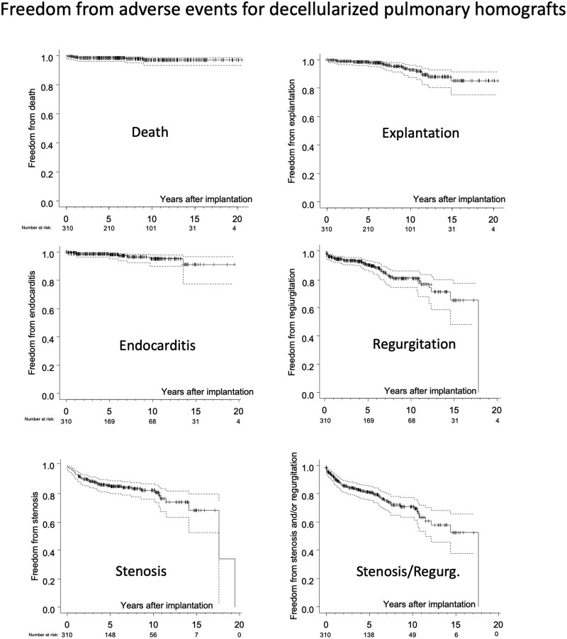
出典: Sarikouch S, Boethig D, Avsar M, et al. Eur J Cardiothorac Surg 2026;68(2):ezag087. doi:10.1093/ejcts/ezag087 / PubMed. CC BY-NC 4.0（原図を改変せず掲載）。
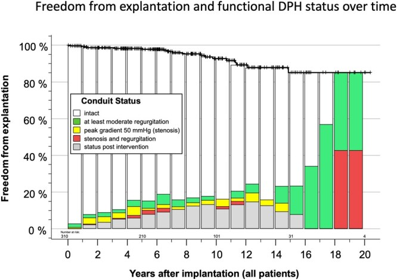
出典: Sarikouch S, Boethig D, Avsar M, et al. Eur J Cardiothorac Surg 2026;68(2):ezag087. doi:10.1093/ejcts/ezag087 / PubMed. CC BY-NC 4.0（原図を改変せず掲載）。
6.3 大動脈位（ARISE、シードref[6]）と、その論評
ARISE Study：EU助成・前向き単一群・8施設、2015-10–2018-10 に144例（男性99）を登録。 年齢中央値30.4歳（IQR 15.9–55.1）、45%が心臓手術既往、19%が2回以上。 DAH径 平均22.6±2.4mm。手術時間中央値312分・CPB 154分・遮断121分。 早期死亡2例（day 3のLCA血栓、術後5時間の心室性不整脈）、晩期死亡3例（心内膜炎1、癌1、Wegener 1）＝総死亡3.47%。 追跡中央値5.9年で、ピーク圧較差中央値11.0mmHg（IQR 7.8–17.6）、逆流中央値0.5（0–0.5, grade 0–3）。 5年 死亡/再手術/心内膜炎/出血/血栓塞栓 回避 = 97.9%/93.5%/96.4%/99.2%/99.3% （10.1093/ejcts/ezae121）。
そして本文 Table 2 の ARISE Registry（全DAH 358例、小児40%を含む） の10年値がこうである。
| Freedom from | 5年 | 10年 |
|---|---|---|
| 死亡 | 98.3% | 95.7% |
| 心内膜炎 | 97.8% | 92.6% |
| Explantation/再手術 | 92.4% | 69.5% |
| 大出血 | 99.4% | 98.8% |
| 血栓/脳卒中 | 99.7% | 94.4% |
Squiers と Brinkman の論評（EJCTS 2024;65(6):ezae197、Baylor Scott & White）は、 この数字を正確に突いた（10.1093/ejcts/ezae197）。
- 比較のバイアス：ARISE の成績を機械弁・生体弁・Ross のメタ解析と比べているが、 「これらの比較は潜在的バイアスに満ちており、慎重に扱わなければならない」。
- CryoLife 比較の交絡：著者らは10年生存95.7%を CryoLife 社の脱細胞化(76%)/凍結保存(57%)homograft より良いとするが、 ARISE Registry は小児が最大30%を占め、CryoLife の比較群は全員成人で約4人に1人が心内膜炎（予後不良のマーカー）だった。
- 決定的な指摘：「凍結保存を避けることで耐久性が改善することを我々も期待しているが、 ARISE Registry で再手術回避が5年92.4%から10年69.5%へ低下したことは、 CryoLife（凍結保存）homograft の耐久性に関する過去の報告ときわめて整合的である」。
- 結語：「ARISE Registry のデータは、我々が同じ歌の別の節を聞いているのかもしれないことを示唆している」。
なお Squiers らが引く「過去の報告」は Mayo Clinic の Helder ら Late durability of decellularized allografts for aortic valve replacement: A word of caution （JTCVS 2016;152:1197-9、10.1016/j.jtcvs.2016.03.050）である。 10年前に同じ警告が出ていた。
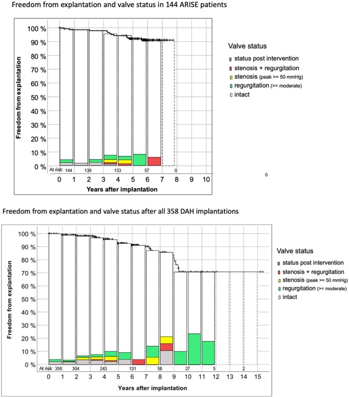
出典: Horke A, Tudorache I, Laufer G, et al. Eur J Cardiothorac Surg 2024;65(4):ezae121. doi:10.1093/ejcts/ezae121 / PubMed. CC BY 4.0（原図を改変せず掲載）。
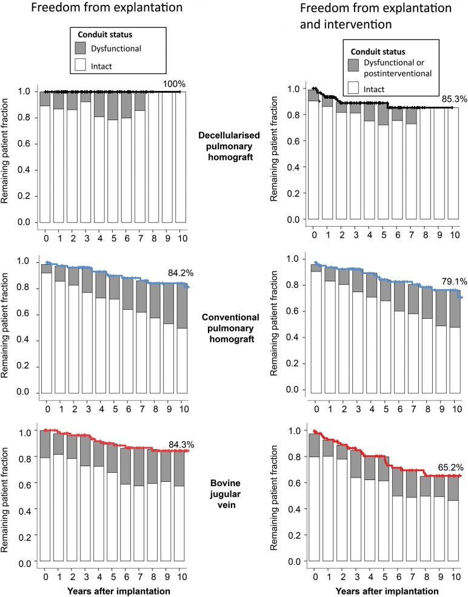
出典: Sarikouch S, Horke A, Tudorache I, et al. Eur J Cardiothorac Surg 2016;50(2):281-290. doi:10.1093/ejcts/ezw050 / PubMed. CC BY 4.0（原図を改変せず掲載）。
6.4 著者自身が書いた限界（これが最も重い）
ARISE 論文の Discussion には、推奨側の文献では珍しいほど率直な記述がある。
- 「現行の DAH の成績は当初の期待に達していない。完全な統合（full integration）はこれまで確実には達成されておらず、 それは患者にとって予見可能な再手術を意味する」
- 「DAH は、解剖や手術既往のために Ross の良い候補でない患者にとって有効な選択肢だと我々は考える」 ＝第一選択とは主張していない
- 「DAH が機械弁による intra-annular 手技より優れているかという問いは未解決のまま（remains open）」
- 「唯一の真に妥当な比較は、機械弁AVR・Ross・DAH を比較する前向き無作為化試験だろう。 我々は最近この種の試験を欧州委員会に申請したが、残念ながら採択されなかった」
- 機序仮説：matrikines（脱細胞化過程で生じる細胞外マトリックス由来ペプチド）が免疫標的の候補。 摘出DAHのサイトカイン/ケモカイン解析では線維性修復機構の不規則な活性化が示唆され、 古典的なT細胞介在性免疫応答ではなかった（組織学的にT細胞浸潤なし）。
残存免疫原性の直接証拠も出ている。Ebken らは15検体のDHV（大動脈7・肺8）を可溶化して 健常者20名の血清と反応させ、既存抗体の結合を半定量した。 18–25歳群（n=10）の血清は48–73歳群（n=10）より有意に強く結合（差 15.1±6.5 arbitrary units、P=0.0315）。 個人差が大きく、同一の健常者が2つの異なるDHVに対して10倍以上の抗体結合を示す例もあった。 結合は肺よりも大動脈DHVで高く、男性で高かった（10.1093/ejcts/ezaa393）。 → 「若年者ほど強く反応する」というのは、living valve を最も必要とする集団で最も不利という意味である。
6.5 有利なデータも公平に置く
- 凍結保存homograftとの中期比較（Sarikouch 2016、シードref[20]）: DPH 93例を年齢・病型・手術回数で 凍結保存homograft(CH) 93例・bovine jugular vein conduit(BJV) 93例にマッチ。 10年 explantation 回避は DPH 100% vs CH 84.2%（P=0.01）vs BJV 84.3%（P=0.01）。 explantation ＋圧較差≥50mmHg 回避は DPH 86% vs CH 64%（n.s.）vs BJV 49%（P<0.001）。 DPH の弁輪径Zスコアは正常方向に収束した（10.1093/ejcts/ezw050）。
- 小児大動脈位（Horke 2024）: 8施設143 DAH／137児（年齢中央値10.8歳、59%が心臓手術既往、17%がAVR既往）。 5年 死亡/explant/心内膜炎/出血/血栓塞栓 回避 = 97.8/88.7/99.1/100/99.2%、 10年 = 96.3/67.1/93.6/98.6/86.9%。21例をexplantしたがredo死亡0、13例に再度DAHを植込み （10.1093/ejcts/ezae112）。
- 機械弁複合graftとの単施設比較（Andreeva 2024, Vienna）: 基部置換 289例（機械弁複合graft 216 vs DAH 73、 平均48.5±12歳、2000–2022）。3年生存 DAH 99% vs MCVG 94%（P=0.15）。 出血14例(6.5%)・血栓塞栓14例(6.5%)はすべてMCVG群、 中等度SVD 4例(5%)はすべてDAH群（P≤0.001）。弁関連有害事象の複合はMCVG群で有意に高い（P=0.0295） （10.1093/ejcts/ezae314）。
- Ross の右心系での比較（Matsubara 2026, Munich）: 8歳以上のRoss 59例（脱細胞化26 vs 凍結保存33）。 5年以内に脱細胞化群では心内膜炎・explant・カテーテル治療がいずれも0、 凍結保存群では心内膜炎2・explant 2・Melody 1。graft dysfunction 回避は5年 90.9% vs 79.0%（P=0.155） （10.1007/s00246-026-04312-1）。
6.6 日本での可用性 — ここが最大の障壁
| 項目 | 状況 |
|---|---|
| ホモグラフト（凍結保存）そのもの | 2016年4月に保険収載（K939-6 凍結保存同種組織加算 81,610点＝令和8年現行）。通知(3)で「組織適合性試験及び同種組織を採取及び保存するために要する全ての費用は、所定点数に含まれ別に算定できない」ため、患者の自己負担は生じない。これに伴い先進医療「凍結保存同種組織を用いた外科治療」は終了した |
| 組織バンク | 東京大学組織バンク（東日本）と国立循環器病研究センター組織保存バンク（西日本）。1990年代初期に凍結保存技術が導入され、1990年代に奈良医科大学・国循へバンクが設立された経緯。施設基準(8)により、自前のバンクを持たない施設も認定バンク保有医療機関と契約すれば届出できる |
| 真の律速＝供給 | 国内の組織提供数は年間約10例（国循 2026-06-23）。東大バンクの提供実績は1998年〜2024年末で264例。移植施設は組織1件あたり約80万円をバンクに支払う（福嶌ら 2017）ため、加算81,610点はほぼその実費に対応する |
| 直近の動き | NCVCの「心臓移植レシピエント由来凍結保存同種組織を用いた外科治療」が2026-06-23に先進医療として承認（日本初・唯一）。移植時に摘出するレシピエント心から弁を採取するドナー源拡大の取り組みで、保険収載と他施設展開が今後の課題 |
| 脱細胞化homograft | 国内未承認。corlife oHG（Hannover Medical School のスピンオフ）が処理を担う欧州の枠組みに依存 |
※ この節の制度情報は一次資料で確認済みである（令和8年医科診療報酬点数表 K939-6 の告示・通知本文、 東京大学組織バンクの2016-04-08告知、および福嶌ら Organ Biology 2017;24(1):29-36）。 未確認の点を1つだけ残す：制度創設時（2016年4月）の点数を福嶌らは9,960点と記しており、 私が点数表で確認できた最古の平成30年では既に81,610点であった。引き上げの時期が特定できていない。 なお当初この節は「保険未収載・先進医療・自費約60万円」と記載していたが、これは 日本心臓財団のQ&A（質問日2012年2月2日）に基づく誤りで、 2014年3月以前の制度を現状として記述していた。訂正済み。
エビデンス格付け（第6章）
| 技術 | E段階 | 普及の壁 | 日本での可用性 | 反証の有無 |
|---|---|---|---|---|
| 脱細胞化肺homograft（RVOT） | E3 | corlife依存・homograft供給 | × 国内未承認（凍結保存homograft自体は保険収載済） | あり：15年→20年で狭窄回避68.3%→0%、≥中等度PR回避65.1%→0%。著者自身が残存免疫原性を仮説 |
| 脱細胞化大動脈homograft（AVR） | E3 | 同上・小児で劣化が速い | × 国内未承認 | あり（強い）：①registry 再手術回避 5年92.4%→10年69.5% ②Squiers/Brinkman「同じ歌の別の節」 ③Helder 2016（Mayo）が10年前に同じ警告 ④著者自身「当初の期待に達していない」 ⑤Ebken：若年者で既存抗体が有意に高い |
| 脱細胞化homograft（Ross の右心系） | E2 | 同上 | × | あり：Matsubara の5年 graft dysfunction 差は P=0.155＝有意差なし（n=59）。Canadian Ross Registry では脱細胞化使用でも6年 dysfunction 11% |
| 凍結保存homograft | E5（歴史的標準） | 供給（国内年間約10例）・耐久性 | ○ 保険収載済（K939-6, 81,610点） | あり：10年 explantation 回避84.2%（脱細胞化との比較） |
🔮 私の見立て
「living valve」という言葉が、この10年で最も期待を歪めた語だと思う。 脱細胞化homograftは、免疫反応を減らして再手術を遅らせることには成功した。 しかし 生きて成長し永続する弁にはなっていない。20年で機能回避が0%になり、 10年で再手術回避が69.5%まで落ちる。これは「凍結保存homograftより少しよい homograft」である。
私が最も評価するのは、Sarikouch/Horke らが自分たちのデータでそう書いたことである。 「当初の期待に達していない」「完全な統合は確実には達成されていない」と書き、 なおかつ「唯一妥当な比較は機械弁 vs Ross vs DAH のRCTだ」と申請して落ちたことまで報告している。 推奨する側がこれを書いている以上、Editorial の「最も先行している」という表現は、 「最も先行しているが、目的地には着いていない」と読むのが正しい。
日本での実務的な結論は単純である。脱細胞化homograft は当院の5年計画に入らない。 ただし理由は当初私が書いた「保険未収載」ではない。凍結保存ホモグラフト自体は2016年4月に保険収載済みであり、 止まっているのは別の2点だ——脱細胞化グラフトが国内未承認であること、そして 原料となるホモグラフトの国内提供数が年間約10例しかないことである。 脱細胞化は corlife oHG での処理を前提とするため、国内で回すには供給と薬事の両方を解く必要がある。 EACTS が6提言の1つに「脱細胞化homograftの拡大」を挙げても、日本ではその手前で止まる。
ただし1つだけ、日本から出せる貢献がある。Ebken らが示した「若年者ほど既存抗体が高い」という所見と、 Sarikouch らの matrikine 仮説は、免疫学的マッチングの可能性を示している。 「術前に homograft を選ぶ（matching する）」という発想は、 供給が乏しい国でこそ価値が高い（少ない弁を最も反応しない患者に当てる）。 これは基礎研究側との共同テーマになりうる。
第7章 組織工学弁とポリマー弁：本当はどこまで来ているのか
- 2つの戦略がある。ex vivo（細胞を播種してバイオリアクターで育てる）と in situ（scaffold を入れて体内で組織化させる）。臨床に届いているのは後者だけで、弁としては E1、パッチとしては E2（日本で薬事承認済） である。
- ポリマー弁（Foldax Tria）の1年成績は Editorial が「良好」と評したが、ワルファリンが必要（目標INR 2.0–2.5）で、1年死亡9.1%、血栓・脳卒中は全例INR低値時。機械弁の欠点を残したまま耐久性の証拠は1年しかない。
- 最も雄弁なのは企業の行動である。Xeltis は弁の pivotal study を2017年に開始して2026年時点で結果未公表、別の弁試験は WITHDRAWN、一方で透析シャント・CABG・PAD の試験を次々に走らせている。
7.1 in situ 型の唯一の成功例は「弁ではなくパッチ」で、それは日本製である
Editorial ref[22] の Kasahara らの報告（10.1016/j.atssr.2024.04.020）は、 生体内吸収性糸と非吸収性糸からなる編物に架橋ゼラチン膜を一体化したハイブリッド経編生地の多施設単一群3年試験である。
- 34例に41部位へ植込み（肺動脈18・RVOT 12・心房中隔7・心室中隔4）
- 年齢中央値 1歳11か月（範囲4か月–58歳）
- 主要エンドポイント（1年時点の生地不全に起因する死亡・再介入のない手術成功率）＝100%
- 追跡中央値40か月（36–55か月）で、心エコー上の異常なし・重篤有害事象なし。 手技に起因する狭窄病変が3件
- 「これらの結果により、日本での本生地の使用が薬事承認された」
制度側を確認すると、この材料は 心・血管修復パッチ「シンフォリウム」（開発コード OFT-G1） で、 大阪医科薬科大学（根本慎太郎）・福井経編興業・帝人の共同開発、 2023年7月11日に製造販売承認、2024年6月12日に販売開始である。 生体内吸収性糸（PLLA）と非吸収性糸（PET）の編物に架橋ゼラチン膜を一体化し、 ゼラチン膜が自己組織に置換されながら分解 → 吸収性糸が分解して非吸収性糸がほどけ伸展性を持つ構造に変化 → 自己組織が編物を包む、という設計である。
これは重要な事実である。 「in situ 組織再生を狙った心血管材料が薬事承認まで到達した」例は 世界でこれが唯一に近い。しかもシードEditorialの唯一の非欧州著者である根本慎太郎の開発品である。 記述の重みづけとしてこの利益相反は読者に開示されるべきだが、 成果そのものは日本発の到達点として正当に評価すべきである。
ただし限界も明確である。これは弁ではなくパッチである。 n=34、単群、追跡40か月。E2 に留まる。
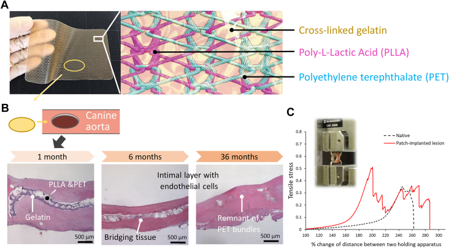
出典: Kasahara S, Yoshimura Y, Ichikawa H, et al. Ann Thorac Surg Short Rep 2024;2(4):804-809. doi:10.1016/j.atssr.2024.04.020 / PubMed. CC BY-NC-ND 4.0（原図を改変せず掲載）。
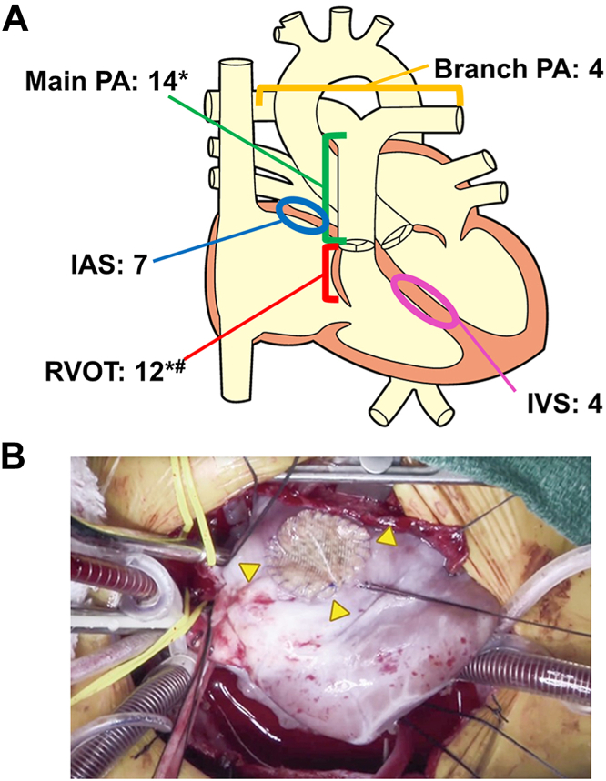
出典: Kasahara S, Yoshimura Y, Ichikawa H, et al. Ann Thorac Surg Short Rep 2024;2(4):804-809. doi:10.1016/j.atssr.2024.04.020 / PubMed. CC BY-NC-ND 4.0（原図を改変せず掲載）。
7.2 in situ 型の「弁」：Xeltis の10年
| 報告 | 内容 |
|---|---|
| Morales 2020（シードref[21]、10.3389/fcvm.2020.583360） | XPV-1 12例（年齢中央値5歳・体重17kg、16mm 5例/18mm 7例、全例手術既往）＋設計変更後の XPV-2 6例（18mm）。12か月で18本中17本が進行性狭窄・拡大・仮性動脈瘤なし。>40mmHg の残存圧較差 3例（conduit kinking 1・末梢肺動脈狭窄2）。XPV-1 の5例が弁尖prolapseによる重度PR。XPV-2 では >mild PR が1例のみ（prolapse 由来ではない）、1例が近位吻合部の急速狭窄で conduit 交換 |
| Prodan 2022（10.1053/j.semtcvs.2021.03.036） | 同じ12例の24か月：外科的再介入0、NYHA I が9/12。「XPV conduit は有望な革新だが、進行性のPIには弁尖の設計（形状・厚み）の改良が必要」 |
そして ClinicalTrials.gov で企業のパイプラインを追うと、次の構図になる。
| NCT | 対象 | n | 開始 | 状態 |
|---|---|---|---|---|
| NCT02700100 | 肺動脈弁付きconduit PV-001 | 12 | 2016-06 | UNKNOWN |
| NCT03022708 | 肺動脈弁付きconduit pivotal | 56 | 2017-05 | ACTIVE_NOT_RECRUITING（primary completion 2022-12、結果未公表） |
| NCT03405636 | 肺動脈弁付きconduit safety/performance | 0 | 2020-09 | WITHDRAWN |
| NCT04898153 → NCT05473299 → NCT06494631 | 透析シャント（aXess） FIH→pivotal→US | 20→120→140 | 2021–2024 | 進行中 |
| NCT04545112 | CABG（XABG）FIH | 20 | 2020-10 | ENROLLING_BY_INVITATION |
| NCT06951685 / NCT07716020 | PAD（XPAD） | 6 / 15 | 2025 / 2026 | RECRUITING / NOT_YET_RECRUITING |
弁のpivotalは2017年に始まり2026年時点で結果が出ておらず、別の弁試験は取り下げられ、 血管グラフト（透析シャント・CABG・PAD）は次々に前進している。 これは「in situ 型の技術そのものは動いているが、弁尖という最も力学的に厳しい部位では動いていない」 という読みを強く支持する。
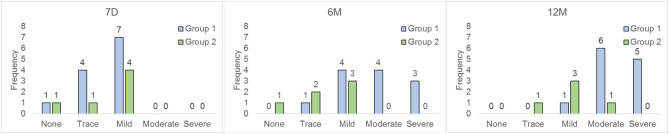
出典: Morales DL, Herrington C, Bacha EA, et al. Front Cardiovasc Med 2020;7:583360. doi:10.3389/fcvm.2020.583360 / PubMed. CC BY 4.0（原図を改変せず掲載）。
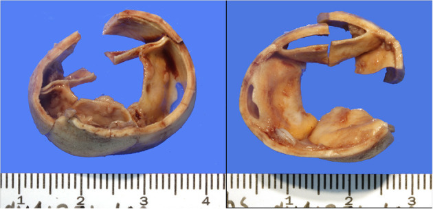
出典: Morales DL, Herrington C, Bacha EA, et al. Front Cardiovasc Med 2020;7:583360. doi:10.3389/fcvm.2020.583360 / PubMed. CC BY 4.0（原図を改変せず掲載）。
7.3 ex vivo 型：石灰化という共通の壁
Editorial Fig.4 は「細胞→scaffold播種/バイオリアクター→機能する生きた弁」という進化図を示すが、 ヒト臨床データは存在しない（E0）。 そして大動物研究を系統的に集計すると、共通の壁が見える。
van der Valk らの systematic review & meta-analysis（肺位TEHVの大動物研究、 基礎解析80研究／メタ解析41研究108群、10.1016/j.jacbts.2022.09.009）：
- 石灰化イベント率 全体35%（95%CI 28–43）
- conduit部 34%（26–43） > 弁尖部 21%（17–27）（P=0.023）
- 多くは軽度（弁尖42%・conduit 60%が軽度）
- 時間推移：植込み1か月以内に急増 → 1–3か月で減少 → その後は経時的に進行
- scaffold材料・細胞前播種の有無・動物種・年齢で有意差なし
- そして最大の問題：80研究のうち石灰化を報告していたのは55%のみ。 「研究間で石灰化の程度も解析の質も報告も大きくばらつき、適切な比較を妨げている」
Nat Rev Cardiol の総説（Fioretta ら、10.1038/s41569-020-0422-8）は 「off-the-shelf 技術」に焦点を当てつつ、科学的・規制的・臨床的課題を並列に挙げている。 つまりこの分野の律速は材料科学ではなく、製造の再現性と規制の道筋である。
7.4 ポリマー弁：Tria の1年をどう読むか
India Mitral Surgical Trial（10.1016/j.jacc.2025.06.017）。 インド8施設、2023年4–11月に67例。女性64%（うち妊娠可能年齢48%）、平均42歳（19–67）、 BMI 22.7、BSA 1.6 m²。NYHA III/IV 54%、STS 1.4%。病因は狭窄27%・逆流30%・混合43%で主にリウマチ性。 術後1日目からVKA、目標INR 2.5。アスピリン75–100mg併用。
| アウトカム | 30日 | 1年 |
|---|---|---|
| 全死亡 | 1.5% | 9.1% |
| 弁/心血管関連死 | 0 | 0 |
| 血栓塞栓 | 1.5% | 7.5% |
| 脳卒中 | — | 4.9%（虚血性3例） |
| 弁血栓 | 0 | 4.3%（2例） |
| 構造的弁劣化(SVD) | 0 | 0 |
| 弁再介入 | 0 | 0 |
| 新規ペースメーカ | 0 | 0 |
| 平均圧較差 | 4.2±1.5 mmHg | 4.6±1.7 mmHg（術前9.0±4.9） |
| EOA | 1.7±0.6 cm² | 1.4±0.4 cm²（術前0.9±0.5） |
| CTA | — | 石灰化なし・弁血栓なし |
| NYHA I | — | 81.4%（術前は全例 ≥II） |
| 6分間歩行 | — | 298.1±127.5 → 494.8±151.6 m（P<0.001） |
| KCCQ | — | 57.5±19.4 → 81.9±14.7（P<0.001） |
批判的評価。
- 抗凝固は不要になっていない。 目標INR 2.0–2.5 のVKAが必須である。 つまりこの弁は「機械弁の抗凝固」を残したまま、「機械弁の耐久性の証拠」を持たない。 Editorial が living valve の潮流の中にこれを置いているのは分類として無理がある。
- INR達成率が低く、それが有害事象を説明している。 目標INR達成は30日61.5%→180日79%→1年95%。 そして血栓事象2件と虚血性脳卒中3件はすべてINR低値時に発生した。 これは「弁が安全」なのではなく「INRを維持できれば安全そう」という所見である。
- SVD 0% は1年では自明。 生体弁のSVDは通常5年以降に立ち上がる。 1年でのSVD 0%を耐久性の証拠として読むことはできない。
- 死亡率の文脈。 著者らは自群の9.1%を「西欧の6.2%より高いがインドのMVRの13%より低い」と位置づけている。 すなわちこの成績はインドのリウマチ性MVR集団の中での相対評価であり、 日本や欧州の集団に外挿できる数字ではない。
前臨床側は Kiser 2025（10.1177/15569845251375566）が公表しており、 LifePolymer（シロキサンポリウレタン系）が非溶血・非変異原性・補体活性化軽微で、 羊の大動脈位6か月摘出で弁尖石灰化なし、ヒト僧帽弁例で6か月に弁尖血栓なし・12か月の平均圧較差3mmHg。 米国では大動脈位EFS（NCT03851068, n=40）と僧帽弁位EFS（NCT04717570, n=15）が走っている。
なお、この領域には2024–2026年に中国勢が複数参入した（Suzhou Hearthill の PoliaValve： NCT07123766 n=50・NCT06737757 n=198・NCT06518681 n=10、Shanghai HeartEpoch：NCT07243184 n=10、 Mitrassist：NCT07097740 n=10）。5年後の勢力図は現在と違う可能性が高い。
7.5 日本発の別ルート：in-body tissue architecture（Biosheet）
Ozaki 手術の自己心膜の耐久性を補う発想として、 体内で自己コラーゲン膜を作らせる（in-body tissue architecture）という日本発の技術がある。 大分大学＋Biotube社のヤギ長期モデルでは、皮下に鋳型を埋めて2か月で Biosheet を形成し、 厚さ0.20–0.35mmのシートでAVNeoを実施した（10.1093/icvts/ivab015）。
- 6か月：弁機能維持、弁輪への融合・弁尖への細胞浸潤・心室側の弾性線維出現＝再生反応
- 12か月：再生構造は退縮せず維持。石灰化は9弁尖中1弁尖でごくわずか
- しかし全例で1弁尖が裂け、中等度〜重度のARに至った
- 対照のグルタルアルデヒド処理自己心膜群（4頭）は12か月で3/4が中等度〜重度AR、 石灰化は12弁尖中9弁尖
- 結論：「Biosheet は自己心膜に対して再生能と抗石灰化特性を持つ可能性があるが、 信頼できる成績のためには厚み・密度・均質性の厳密な制御と最適化がさらに必要」
大動物で全例が弁尖裂断という結果は、この技術が弁尖としてはまだ E0 であることを示す。 ただし「自己心膜より石灰化しない」という比較データは、第8章のOzaki論と直結する。
エビデンス格付け（第7章）
| 技術 | E段階 | 普及の壁 | 日本での可用性 | 反証の有無 |
|---|---|---|---|---|
| 自己組織化ハイブリッド生地（シンフォリウム） | E2 | パッチであって弁ではない | ○ 2023-07承認／2024-06発売 | 探したが見つからなかった（n=34・単群という限界のみ） |
| 生分解性ポリマーconduit（Xeltis XPV） | E1 | 弁尖設計の反復が必要 | × 未承認 | あり：第1世代12例中5例（42%）が prolapse 由来の重度PR。pivotal（n=56）が2017年開始で結果未公表、別試験はWITHDRAWN、企業は血管グラフトへ軸足を移した |
| ポリマー弁（Foldax Tria 僧帽弁位） | E1 | VKA必須・耐久性の証拠が1年 | × 未承認（米国EFS進行中） | あり：①抗凝固不要にならない ②1年死亡9.1%・脳卒中4.9%・弁血栓4.3%で全例INR低値時 ③SVD 0%は1年では自明 ④インドのリウマチ性集団内の相対評価 |
| 組織工学弁（ex vivo / in situ） | E0 | ヒト臨床データなし・製造・規制 | × 研究段階 | あり：大動物メタで石灰化35%（conduit 34% > 弁尖21%）。80研究の55%しか石灰化を報告していない＝報告バイアス |
| Biosheet（in-body tissue architecture, 日本） | E0 | 厚み・密度の制御 | × 研究段階 | あり：ヤギ12か月で全例1弁尖が裂断（ただし石灰化は自己心膜9/12弁尖に対し1/9弁尖） |
🔮 私の見立て
この章は「未来っぽさ」と「成熟度」の乖離が最大の章である。 そして乖離の方向は一貫している。 図が美しいものほど臨床から遠い。 Editorial Fig.4（細胞→バイオリアクター→生きた弁）は E0、 ポリマー弁は E1、そして実際に薬事承認まで届いたのは弁ではなくパッチだった。
私が最も重視する所見は、Xeltis の企業行動である。 弁の pivotal を2017年に始めて2026年に結果が出ず、別の弁試験を取り下げ、 透析シャント・CABG・PAD へ資源を移した。これは失敗の告白ではないが、 「in situ 型は血管では動き、弁尖では動かない」 という技術的判断が企業内で下されたことを強く示唆する。 弁尖は年3,000万回開閉する。血管は開閉しない。この差は材料工学的に本質的である。
ポリマー弁については、Editorial の扱いに明確に反対する。 VKAが必要な弁は「living valve の潮流」に属さない。 Tria は 「石灰化しない生体弁様の血行動態を持つが抗凝固が必要な弁」であり、 位置づけとしては 機械弁と生体弁の中間に新しい選択肢を作る試みである。 それは価値があるが、Editorial の3潮流の枠組みからは外れている。 そして耐久性は1年では何も言えない。この弁の評価は2030年頃に決まる。
日本にとっての実務的な結論。シンフォリウムを持っていることの意味を、もっと自覚してよい。 世界の in situ 組織再生で唯一薬事承認に到達した材料が日本発である。 次の一手は「これを弁にできるか」ではなく（弁尖の力学は別問題である）、 「パッチとして使える範囲を広げ、長期データを出す」ことだと考える。 Biosheet も同様で、ヤギで全例裂断した現状では弁尖への適用を急ぐべきではないが、 「自己心膜より石灰化しない材料」という比較データは Ozaki 手術の弱点を突いており、 パッチ材料としての価値が先に立つ。
第8章 Ozaki手術と「日本発術式」の国際的評価 — そして lifetime management
- Editorial は Ozaki を小児2報（Baird 2021 と Karamlou 論評）だけで扱い、尾崎の原典コホートを引用していない。これは Editorial 最大の書誌的欠落である。
- 2025年、その原典が 1,196例の中期成績 として JACC Advances に出た。しかも Toho University と Cleveland Clinic の共同解析（Pettersson・Blackstone・Svensson が共著）である。2021年に懐疑的な論評を書いた側が、2025年には定量解析の共著者になっている。
- 数字は良好だが単調ではない。10年 生存78%・再手術回避92%、平均圧較差は10年で8.2mmHgと安定。しかし ≥2+ AR は 6か月0.30% → 5年2.9% → 10年6.6% と着実に増える。
8.1 Editorial の欠落と、それが埋まった経緯
Editorial ref[24][25] は Boston Children's の Baird 2021（57例、追跡中央値8.1か月）と、 Cleveland Clinic の Karamlou らの論評である。 Baird らの結論は「AVRec は許容できる短期成績で、小児の先天性大動脈弁・truncal valve に考慮されるべき。 最適なパッチ材料と晩期の弁機能・弁輪成長の継続を判断するには、より長期の追跡が必要」 （10.1016/j.jtcvs.2020.01.087）。
Editorial はこれを「小児で普及、新生児での耐久性は課題、Rossへのbridgeという見方もある」とまとめた。 しかし成人の原典は引用していない。
2025年11月、JACC: Advances に Ozaki S ら「Mid-Term Experience With 1,196 Ozaki Procedures」 （10.1016/j.jacadv.2025.102156）が出た。 著者列は Ozaki S, Hoshino Y, Unai S, Harb SC, Frankel WC, Hayama H, …, Svensson LG, Rajeswaran J, Blackstone EH, Pettersson GB。 すなわち 東邦大学大橋病院の原典コホートを、Cleveland Clinic の統計部門（Blackstone・Rajeswaran）が解析した共同論文である。
2021年に「小児の視点から」慎重な論評を書いた Pettersson が、2025年には定量解析の共著者になっている。 日本発術式が国際的に評価される過程として、これは典型的かつ良好な経路である （懐疑 → 共同での定量化 → 位置づけの確定）。
8.2 原典1,196例の中身
2007-04–2021-05、東邦大学大橋病院。1,196例（男性60%、年齢11–90歳）。 感染性心内膜炎2.4%、二尖弁27%、AS 54%・AR 24%・混合7.3%、同時手術46%。 追跡は50%が3.2年超、10%が9年超。
| 項目 | 値 |
|---|---|
| 単独Ozakiの CPB / 遮断 | 151±37分 / 105±29分 |
| 30日死亡 | 1.7% |
| 新規脳卒中 | 2.6% |
| 新規透析 | 4.0% |
| 恒久ペースメーカ | 1.5% |
| 平均大動脈弁圧較差 | 6か月 7.4 → 5年 8.0 → 10年 8.2 mmHg |
| ≥2+ 逆流 | 6か月 0.30% → 5年 2.9% → 10年 6.6% |
| LV mass index | 術前 141±52 → 10年 90±51 g/m² |
| 10年 生存 / 再手術回避 | 78% / 92% |
結論：「Ozaki 手術は、低く安定した圧較差と左室の逆リモデリングを伴う良好な大動脈弁を作る。 逆流の率は低いが経時的に増加する。再手術リスクは低く、継続使用を支持する」。
尾崎らの1,196例（JACC Advances 2025）は本章の中核だが、JACC系の図は本リポジトリの方針で使用しないため、 圧較差の推移図・AR gradeの推移図・再手術のhazard図はいずれも掲載していない。 代わりに、同じ術式を独立に評価した German Heart Center Munich の162例（JTCVS Tech、CC BY-NC-ND）の図を §8.3 の末尾に置いた（図16・図17）。数値は本文に転記してある。
8.3 他施設・メタ解析での検証
| 研究 | n | 主要結果 |
|---|---|---|
| Mylonas 2023 Am Heart J（10.1016/j.ahj.2022.09.003） | 22研究1,891例（患者レベル再構築） | 平均年齢43.2±24.5歳（成人65±12.3・小児12.3±3.8）。院内死亡0.7%、恒久ペースメーカ0.7%、退院時EOA 2.1±0.5 cm²/m²。最終追跡でピーク圧較差15.7±7.4mmHg、中等度AI 0.25%。再手術回避 1年98.0%・3年97.0%・5年96.5%。しかし再手術の半数以上（51.5%）が感染性心内膜炎で、心内膜炎リスクは0.5%/患者年 |
| Prinzing 2024 JTCVS Tech（10.1016/j.xjtc.2024.02.011、German Heart Center Munich） | 162例（平均52.6±16.6歳、二尖弁81.5%） | 退院時ピーク/平均 15.6/8.4mmHg・EOA 2.4±0.8cm²、5年でも14.5/7.5mmHg・2.3±0.8cm² と安定。5年 中等度以上SVD 9.82%±3.87、重度SVD 6.96%±3.71、bioprosthetic valve failure 12.1%±4.12。5年生存97.3%、再手術回避91.3%。「再手術の主因は心内膜炎、SVDの率は低い」 |
| Benedetto 2021 EJCTS（10.1093/ejcts/ezaa472、UK 2施設55例＋メタ解析） | AVNeo 7研究1,205例 vs Trifecta/Magna Ease/Freedom Solo/Freestyle/Mitroflow/autograft | 平均12.5か月で心内膜炎3例・再介入1例、ピーク/平均 16±3.7 / 9±2.2mmHg。メタでは AVNeo は Magna Ease 以外のすべての生体弁と SVD・再介入・心内膜炎で有意差なし。Magna Ease と比べると AVNeo（と他の弁）は弁関連イベントが過剰 |
| Boehm 2022 J Card Surg（10.1111/jocs.16800） | AVNeo 105 vs SAVR（Trifecta）458 | EOA 2.4±0.8 vs 2.1±0.6 cm²（P<.001）、EOAI 1.23±0.4 vs 1.02±0.3（P<.001）。平均圧較差 8.0 vs 8.3mmHg（P=.091） |
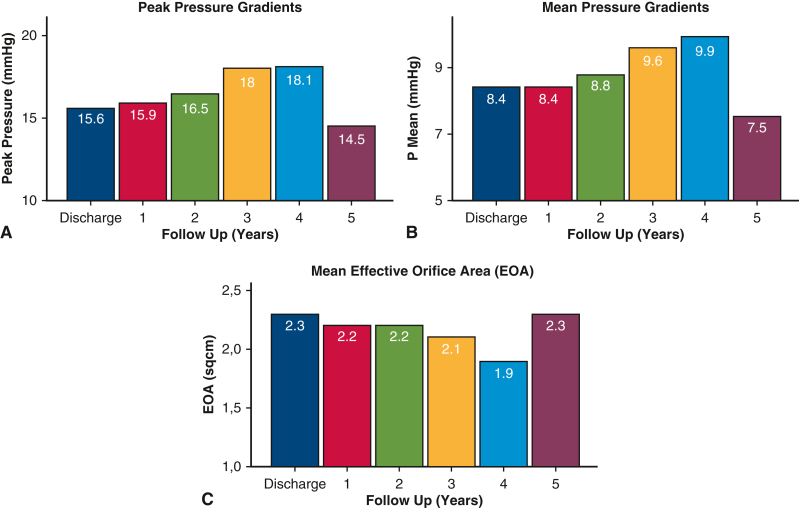
出典: Prinzing A, Boehm J, Burri M, et al. JTCVS Tech 2024;25:35-42. doi:10.1016/j.xjtc.2024.02.011 / PubMed. CC BY-NC-ND 4.0（原図を改変せず掲載）。
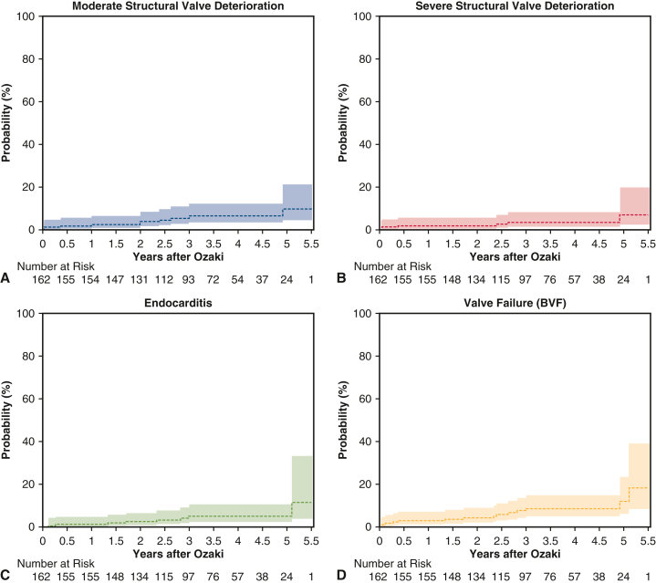
出典: Prinzing A, Boehm J, Burri M, et al. JTCVS Tech 2024;25:35-42. doi:10.1016/j.xjtc.2024.02.011 / PubMed. CC BY-NC-ND 4.0（原図を改変せず掲載）。
8.4 Ozaki への最も鋭い反証は、De Paulis 総説の一文である
第3章で引いた Eur Heart J 2025 総説には、こう書かれている （10.1093/eurheartj/ehaf038）。
lack of tissue (e.g. inadequate gH), would require the addition of patch tissue (i.e. pericardium), which has repeatedly resulted in a high proportion of failures requiring reoperation
そして結論部でさらに踏み込む：
The use and the amount of autologous or heterologous pericardium to compensate for cusp tissue deficit is correlated with the worst outcome especially when sutured in valve areas of high mechanical stress. Techniques are less standardized, and results are less satisfactory.
「心膜による cusp 補填は最悪の転帰と相関し、とくに力学的ストレスの高い部位に縫合された場合はそうである」。
これは Ozaki 手術への直接的な批判ではない（総説が論じているのは部分的なパッチ補填であり、 Ozaki は3弁尖すべてをテンプレートで作り直す全置換である）。 しかし 「自己心膜は力学的ストレスに弱い」という一般命題は共有される。 実際、Prinzing の162例では5年で bioprosthetic valve failure 12.1% が出ている。 そして第7章で見た Biosheet のヤギ実験では、 グルタルアルデヒド処理自己心膜群で12弁尖中9弁尖が石灰化した。
→ Ozaki 手術の中期成績が良好であることと、自己心膜が長期には弱いことは、両立する。 1,196例の10年 ≥2+AR 6.6% という数字は「まだ低い」と読むことも「10年で6.6%まで来た」と読むこともできる。 20年データが出るまで判断は保留すべきである。
8.5 lifetime management：Ozaki／AAE／ViV／explant をどう並べるか
Editorial は lifetime management をほぼ扱っていない。当リポジトリの資産で埋める。
TAVI 後の外科は「増えている」が「うまくいっていない」。
- 米国 Medicare 2012–2024：TAVI 410,720例に対し redo TAVI 2,374例・TAVR explant 1,346例。 SAVR 299,780例に対し ViV-TAVR 5,044例・redo SAVR 4,202例。 TAVI 再介入の年間発生率は2019年0.17%→2023年0.28%。 redo TAVI は index TAVI から3か月以内が最多（17.3%）、explant は1–2年が最多（19.2%）だが、 5年を超えると再介入の88.5%が redo TAVI（10.1001/jamacardio.2025.3224）。
- EXPLANT-TAVR 199例：同時手術47.2%（僧帽弁45・CABG 23）。 同時手術群は index TAVI 時の STS-PROM が高く（5.9% vs 3.7%, P=.001）、 CPB（166 vs 114分）・遮断（123 vs 81分）が長く、 30日死亡16.7% vs 9.9%・1年死亡36.1% vs 22.1%（いずれもP>.05）だが、 3年累積生存は 56.8% vs 81.1%（P=.020） （10.1016/j.athoracsur.2023.05.036）。
- Michigan 1,487 TAVI：8年 AV再介入累積4.6%（28例）。 適応はSVD 39%・PVL 36%。71%が repeat TAVI 不適で、理由は同時手術の必要（50%）・ 不利な解剖（45%）・心内膜炎（10%）。explant では大動脈修復35%・僧帽弁35%・三尖弁25%・CABG 20%が併施され、 そのうち71%は予定外（device の周囲組織への強固な癒着による）。explant群の院内死亡15% （10.1016/j.jtcvs.2021.03.130）。
日本の文脈に翻訳する。 日本では2020年に isolated AVR/repair ± CABG が 8,592例、TAVI が 9,774例で、 すでにTAVIが外科AVRを追い越している（10.1007/s11748-023-01979-8）。 したがって「10年後に explant を引き受ける」問題は日本でも確実に来る。 そのとき効くのは、初回手術で弁輪を小さくしなかったことである。
ここで第4章の HAART の教訓が効いてくる。Yokoyama らは 「剛性 intra-annular 設計と過度の downsizing が将来のカテーテル治療の選択肢を制限しうる」 と明記した。同じ論理は Ozaki にも、AAE にも適用される。
- Ozaki：弁輪を拡げも縮めもせず自己組織で弁を作るため、ViV の余地を最も残す術式である。 1,196例の10年平均圧較差8.2mmHg・EOAI 1.23（Boehm）は、 将来 ViV を入れる際の「元の内径」として有利である。
- AAE（Nicks/Manouguian/Konno/Y-incision）：内径を積極的に拡げる戦略で、 詳細はAAE術式アトラスに委譲する。 Badhwar の RAVR 212例で弁輪拡大が10.8%に併施できたことは、 「低侵襲でも拡大を諦めない」という第2章の論点に接続する。
- HAART のような弁輪縮小デバイス：ViV の余地を削る方向であり、 lifetime management の観点からは最も慎重に扱うべきである。
エビデンス格付け（第8章）
| 技術 | E段階 | 普及の壁 | 日本での可用性 | 反証の有無 |
|---|---|---|---|---|
| Ozaki手術（AVNeo） | E2→E3（原典1,196例＋メタ1,891例＋独162例） | 自己心膜の採取・テンプレート技術の標準化 | ○ 保険適用（弁形成術）・指定施設70超 | あり：①Prinzing 5年 BVF 12.1%・中等度以上SVD 9.82% ②再手術原因の51.5%が心内膜炎（0.5%/患者年） ③Benedetto メタで Magna Ease に対し弁関連イベント過剰 ④De Paulis 総説「心膜による cusp 補填は最悪の転帰と相関」 ⑤無作為化比較なし |
| TAVI explant（外科的救済） | E3（EXPLANT-TAVR 199例、Medicare 1,346例） | 癒着・同時手術 | ○ | あり：同時手術併施で3年生存56.8%。71%が予定外の同時手術 |
| ViV-TAVR | E3 | 元の内径・冠動脈閉塞リスク | ○ | 5年超では再介入の88.5%が redo TAVI ＝ ViV が既定路線化 |
| 弁輪拡大（AAE） | E3 | 手技難度 | ○ | 詳細はAAE術式アトラスへ委譲 |
🔮 私の見立て
Editorial が尾崎の原典を引用しなかったことは、単なる書誌ミスではなく構造の反映だと思う。 引用されたのは Boston Children's（欧米）と Cleveland Clinic の論評（欧米）であり、 日本発術式は「欧米で追試されたときに初めて引用可能になる」 という経路が透けて見える。 2025年の JACC Adv 論文が Toho × Cleveland の共著になったのは、 その経路を尾崎グループが正面から通したということである。これは日本発術式の輸出の型として学ぶ価値がある。 （同型の例として、当リポジトリの須磨のRGEAがある： 着想 → 3段階の自前検証 → 国際的採用。）
Ozaki 手術そのものについての私の見立ては 「10年までは強い、20年は未知」 である。 10年で生存78%・再手術回避92%・平均圧較差8.2mmHgは、生体弁と比べて明確に良い。 しかし ≥2+AR が 0.30 → 2.9 → 6.6% と加速はしていないが単調に増えている曲線の先を、 私は楽観できない。自己心膜が力学的ストレスに弱いという証拠は De Paulis 総説と Biosheet のヤギ実験の両方から出ている。
したがって当院の位置づけは「若年の中間層に対する第一選択ではなく、 lifetime management の中の一手」 とする。具体的には：
- 50–70歳で、弁輪が小さく、生涯で1回の再介入をViVで済ませたい患者：Ozaki は有利（内径を残す）
- 40歳未満：Ross の方がエビデンスが強い（第5章）が日本では homograft がない。 → 現実的には Ozaki か機械弁の二択になる。ここが日本固有の空白である
- 心内膜炎の既往・活動性：Ozaki の再手術原因の半数が心内膜炎である以上、避ける
第9章 失敗した未来から学ぶ — 新技術評価チェックリスト
- かつて「未来」と呼ばれて淘汰された弁は多い。共通するのは ①早期の単施設中期成績が良好だった ②小サイズと若年で先に壊れた ③警告が出てから市場が動くまでに5〜10年かかった という3点である。
- 最も再現性のある落とし穴は actuarial（Kaplan-Meier）と actual（competing risk）の混同 と、「未検出のSVDは手術されたSVDと同数いる」 という事実である。
- この章の成果物は、第4章〜第7章の技術を評価するために使える 10項目のチェックリストである。
9.1 事例1：Trifecta — 「最良の血行動態」が7年で崩れた
Michigan の1,058例（2011–2015、Trifecta 508 vs 非Trifecta 550） （10.1016/j.athoracsur.2019.06.032）。
- 7年以内のSVDは28例（Trifecta 22 / 非Trifecta 6）
- 累積SVD：全体で 13.3% vs 4.6%（P=.010）、65歳以下では 27.9% vs 6.9%（P=.004）
- 5年から7年の間に顕著に増加
- Trifecta群の破綻様式は50%以上がAR または混合狭窄/逆流。非Trifecta群にはゼロ
- 多変量競合リスク回帰で、唯一の寄与因子は若年（HR 0.56/10歳低下、95%CI 0.44–0.72、P<.001）
Trifecta は「externally mounted pericardium による最大のEOA」を売りにした弁だった。 血行動態は実際に優れていた。しかし外付け構造は cusp tear を生み、 若年で先に壊れた。第7章のポリマー弁が「1年でSVD 0%」を示していることを、 この曲線と重ねて読む必要がある。
9.2 事例2：Mitroflow — 「未検出のSVD」の発見
デンマーク全国研究：2000年以降に Mitroflow を植込まれ生存中の患者を横断的に呼び戻した （10.1093/ejcts/ezx321）。
- 1,552例のうち861例が死亡、47例が再手術（うち40例がSVDによる）
- 残る644例に案内を出し、574例が心エコー評価を受けた
- 173例にSVDが診断された：重度64例（11%）・中等度109例（19%）
- 重度SVDは人工弁の使用年数と小サイズに関連：サイズ19 HR 6.26（1.63–24.06, P=0.008）、サイズ21 HR 2.72（0.97–8.56, P=0.06）
- 9年の再手術または重度SVDの累積発生率：19mm 12.5%・21mm 7.6%・23mm 3.1%
- そして結論の一文：「未検出の重度SVDの発生率は、手術されたSVDの発生率と同じくらい高かった」
この一文が本章の中核である。 再手術率で耐久性を測ると、 「壊れているが手術に至っていない弁」が丸ごと消える。 当リポジトリの弁別耐久性レビューでも、 Mitroflow は「9年SVD回避67.9%（全体）／若年・19mmで早期劣化」、 Sorin Soprano は「重度SVD 19.5%＠平均8.6年」として反面教師枠に分類されている。
9.3 事例3：抗凝固の「軽量化」— 2つの無作為化試験の連敗
第1章で詳述した PROACT Xa（アピキサバンで試験中止）と PROACT Mitral（低用量ワルファリンで非劣性未達）は、 「デバイス設計で薬を減らす」という約束が無作為化のレベルで2回失敗した事例である。 そして SWEDEHEART は、低INRを承認された唯一の弁（On-X）が他の機械弁と差がないことを示した。
評価の教訓：「この弁なら抗凝固を減らせる」という主張は、 単群の観察研究ではいくらでも作れる（日本の30年519例がまさにそれで、そちらは成功している）。 無作為化に耐えるかどうかは別問題である。
9.4 事例4：sutureless弁のペースメーカ — 時間短縮の代償
Perceval のメタ解析（7観察研究3,196例、10.1186/s13019-023-02273-7）： 30日死亡2.5%、生存 1/2/3/4/5年 = 93.4/89.4/84.9/82.0/79.5%、 CPB 78分・遮断52分（短い）、平均圧較差9–13.6mmHg・EOA 1.5–1.8cm²。 しかし 恒久ペースメーカ植込み7.9%、重度PVL 1.6%、SVD 1.5%、脳卒中4.4%、弁explant 2.3%。
遮断52分という数字は魅力的で、これが経腋窩AVR（遮断43分）を成立させた基盤でもある（第2章）。 だが PPM 7.9% は、Badhwar の RAVR の 2.8% や Ozaki の 1.5%（1,196例）と比べて明確に高い。 「速さ」と「伝導系」はトレードオフになっている。
9.5 actuarial と actual を混同しない
耐久性の議論で最も頻繁に起きる誤読を、明示的に書いておく。
| 指標 | 何を測るか | いつ過大/過小になるか |
|---|---|---|
| actuarial（Kaplan-Meier） | 「死亡を打ち切りとして、生きていればSVDが起きる確率」 | 高齢者では過大評価（実際にはSVD前に亡くなる） |
| actual（competing risk / cumulative incidence） | 「死亡を競合イベントとして、実際にSVDが起きた割合」 | 若年者・長期追跡では両者が近づく |
本レビューで引いた数値の型を確認しておくと：
- Sarikouch の20年（狭窄回避68.3%→0%）は Kaplan-Meierであり、 著者自身が「15年を超える at risk 例数は限られている」と注記している
- Fukuhara の Trifecta SVD は competing risk regression（より保守的）
- Yokoyama の HAART 5年再介入率 40.8%（95%CI 20.0–70.5）は n=17 の推定で、信頼区間が極端に広い
- Ozaki 1,196例の「10年 生存78%・再手術回避92%」は追跡の10%が9年超という分布であり、 10年時点の at risk 例数は限られる
単施設中期成績を読むときの原則：n が二桁なら点推定を信じず区間を見る。 追跡分布（中央値だけでなく「何%が何年超か」）を必ず確認する。
9.6 成果物：新技術評価チェックリスト（10項目）
第4章〜第7章の技術を評価するために使う。
| # | 問い | 落ちた例 |
|---|---|---|
| 1 | 規制承認の根拠は何例か。 100例未満なら市販後に評価が反転する前提で扱う | HAART：3試験計約106例で市販 |
| 2 | 単施設の比率はどれくらいか。 「多施設」と書かれていても内訳を見る | RAVR 212例の85%がWVU単施設 |
| 3 | 対照群があるか。 ないなら「安全そう」までしか言えない | 術中加圧device（n=24単群）、Tria（単一群） |
| 4 | 若年・小サイズでの成績が別に示されているか。 壊れるのは常にそこから | Trifecta 65歳以下27.9%、Mitroflow 19mm 12.5% |
| 5 | actuarial か actual か。 追跡分布（何%が何年超か）まで確認する | Sarikouch 20年（at risk 少数） |
| 6 | 「未検出の破綻」を探した研究があるか。 再手術率だけでは半分しか見えない | Mitroflow：未検出の重度SVDが手術例と同数 |
| 7 | 薬を減らす主張が無作為化で検証されているか | PROACT Xa 中止、PROACT Mitral 非劣性未達 |
| 8 | 速さ・簡便さの代償が計上されているか（PPM率・遮断時間・conversion率） | Perceval PPM 7.9%、経腋窩は新規PPM率を報告していない |
| 9 | 次の治療を妨げないか（ViV の余地・explant の困難さ） | HAART：downsizing が ViV を制限。TAVI explant：71%が予定外の同時手術 |
| 10 | 企業のパイプラインはその技術に向いているか。 論文より雄弁なことがある | Xeltis：弁 pivotal 未公表・別試験 WITHDRAWN・血管グラフトへ移動 |
エビデンス格付け（第9章）
| 事例 | 何が確立したか | 反証を探した結果 |
|---|---|---|
| Trifecta 早期SVD | 確立（Michigan competing risk、65歳以下27.9%） | Cohen らの反論論評（Early trifecta valve failure: Warning shot or unfair scrutiny?）が同時期に出ており、当初は論争があった |
| Mitroflow 早期SVD | 確立（デンマーク全国1,552例＋Sénage Circulation 2014） | Yankah 2008 は「21年まで耐久」と報告したが≥70歳限定だった |
| Sorin Soprano | 確立（スウェーデン全国、重度SVD 19.5%＠8.6年） | — |
| 抗凝固の軽量化 | 反証確立（RCT 2本） | 日本の低強度INR 30年519例は良好＝観察研究では成立する |
| sutureless の PPM | 確立（メタ 3,196例で7.9%） | 経腋窩AVRの1,000例報告は新規PPM率を記載していない |
🔮 私の見立て
「失敗した未来」に共通するのは、技術の欠陥ではなく評価設計の欠陥である。 Trifecta も Mitroflow も、最初の5年のデータは良かった。 壊れたのは6年目以降で、しかも若年と小サイズから壊れた。 つまり 「5年の全体成績」は、若年小サイズの10年成績について何も教えない。
このチェックリストを本レビューの技術に当てると、警報が鳴るのは次の順になる。
- HAART（#1 約106例／#2 単施設報告の散在／#4 downsizingで小さく作る／#9 ViVを制限） — 4項目該当
- ポリマー弁 Tria（#3 単一群／#5 1年でSVD 0%は無情報／#7 抗凝固は減っていない） — 3項目該当
- 経腋窩AVR（#2 単施設／#8 新規PPM率を報告していない） — 2項目該当
- ロボットAVR（#2 85%単施設／#3 対照なし） — 2項目該当。ただし #8 は PPM 2.8% を報告済みで良好
- 脱細胞化homograft（#5 20年は at risk 少数／#6 は満たしている＝機能低下を自ら報告） — 1.5項目該当
逆に、チェックリストをほぼ通過するのは Ozaki 手術と VSARR である。 Ozaki は n=1,196・10年・追跡分布を明示・PPM 1.5%を報告・ViVの余地を残す・ そして再手術原因（心内膜炎51.5%）まで開示している。 VSARR は7,878例のメタと Class I があり、低volume施設の成績まで報告されている。 「未来っぽさ」の順序と「評価設計の健全さ」の順序は、ほぼ逆である。
第10章 次の5年：格付け一覧と、日本での実行戦略
- Editorial の6提言のうち、エビデンス的に支持できるのは3つ、条件付きが2つ、そして1つ（AIによる耐久性予測）は一次文献が存在しない。
- 日本での実行可能性で並べ替えると、順序は欧州と逆になる。ロボット弁置換は保険適用済み（2024年度改定）、Ozaki は保険適用・指定70施設超。Ross は制度上は2016年から保険適用済み（K939-6）だがホモグラフトの国内提供が年間約10例で律速され、脱細胞化homograftは国内未承認でその手前にある。
- 日本の最大の数字はこれである。大動脈弁形成は2020年に全国173例＝全大動脈弁手術の1.6%。EACTSが「弁形成を最優先せよ」と言う世界と、日本の実務の距離はここに集約される。
10.1 全技術のE段階マトリクス（一覧）
| 技術 | E段階 | 反証 | 日本での可用性 | 章 |
|---|---|---|---|---|
| bileaflet機械弁 | E5 | 抗凝固軽量化は2 RCTで失敗 | ○ | 1 |
| stented生体弁 | E5 | 個別製品で早期SVD | ○（大動脈位87.9%） | 1・9 |
| 上部部分胸骨切開AVR | E4 | Cochrane：死亡/疼痛/QOLに差なし | ○ | 2 |
| MIMVS | E4 | 遮断時間が死亡と相関（MMIR） | ○ | 2 |
| ロボット僧帽弁形成 | E4 | 94例の壁・前尖病変で耐久性83% | ○（年2,525例） | 2 |
| VSARR（reimplantation） | E4（GL Class I B） | 弁置換とのRCTなし・61歳超で不利 | ○（ただしAV形成は年173例） | 3 |
| Ross手術 | E4 | 低volumeで死亡3倍・RCTはn=43 | ×（homograft未収載） | 5 |
| 脱細胞化homograft（肺/大動脈） | E3 | 10年で再手術回避69.5%・著者自ら「期待に達していない」 | ×（未承認） | 6 |
| 外部リング弁輪形成 | E3 | CAVIAAR主要複合は有意差なし | △（未承認） | 3・4 |
| 小児の低侵襲開胸 | E3 | 見つからなかった | △ | 2 |
| TAVI explant / ViV | E3 | 同時手術で3年生存56.8% | ○ | 8 |
| Ozaki手術 | E2→E3 | 5年BVF 12.1%・再手術の51.5%が心内膜炎 | ○（保険適用・70施設超） | 8 |
| 経腋窩AVR | E2 | 新規PPM率未報告・他報告で脳卒中2.0–6.3% | △ | 2 |
| ロボットAVR | E2 | 85%単施設・対照なし・遮断117分 | ○（2024年度から保険適用） | 2 |
| 内側リング（HAART） | E2 | 44%再介入・同一著者群が失敗機序を記述・RCT進行中 | × | 4 |
| シンフォリウム | E2 | 見つからなかった（n=34） | ○（2023承認/2024発売） | 7 |
| 術中加圧可視化device | E1 | n=24単群・COIあり | × | 3 |
| ポリマー弁（Tria） | E1 | VKA必須・1年死亡9.1% | × | 7 |
| Xeltis XPV | E1 | 42%に重度PR・企業は血管へ移動 | × | 7 |
| 抗凝固不要機械弁（TRIFLO） | E1 | ヒト成績未公表 | × | 1 |
| 組織工学弁（ex vivo/in situ） | E0 | 大動物で石灰化35% | × | 7 |
| Biosheet | E0 | ヤギ12か月で全例弁尖裂断 | × | 7 |
| AIによる耐久性予測 | E0 | 一次文献が0件 | — | 10 |
10.2 EACTS 6提言への賛否
Editorial の結論部は「今後5年が分水嶺」として6つを提言している。一つずつ判定する。
| # | 提言 | 判定 | 根拠 |
|---|---|---|---|
| 1 | 弁形成を最優先せよ | 賛成 | 2025 GLでVSARRがClass I B・AVrがIIa B。reimplantationメタ7,878例で10年再手術回避91%。CAVIAARで弁関連死HR 0.09 |
| 2 | 術中評価ツールを早期に市場投入せよ | 反対（条件付き） | 提言の根拠となる device は n=24 の単群で、しかも責任著者自身の製品。第9章チェックリストの#1#3に該当する。「早期の市場投入」は HAART が実際にやったことであり、その結果が第4章である |
| 3 | 計算モデル/AIで耐久性を予測せよ | 判定不能 | 該当する臨床エビデンスが1本も存在しない。方向として否定はしないが、6提言の中でこれだけがE0 |
| 4 | 低侵襲/ロボットを推進せよ | 賛成（日本ではすでに進行中） | 日本はロボット弁形成・弁置換ともに保険適用、JCVSD 2022でMICS-MV修復2,525例・30日死亡0.3% |
| 5 | Rossを普及させよ | 賛成。日本の障壁は償還ではなく供給 | EACTS consensus 2026がTable 1-6を提示。ホモグラフトは2016年4月に保険収載済み（K939-6, 81,610点・患者負担なし・契約により届出可）だが、国内提供数が年間約10例。「普及」の前に解くべきは組織提供体制である |
| 6 | 脱細胞化homograftを拡大せよ | 反対（時期尚早） | 10年で再手術回避69.5%。推奨側の著者自身が「当初の期待に達していない」「完全な統合は達成されていない」と明記。拡大より先に、10年成績の更新と免疫機序の解明 |
10.3 日本の制度・症例数の現実
| 項目 | 数値・状況 | 出典 |
|---|---|---|
| 弁膜症手術（2020） | 18,366例（2019年23,340例から−21.3%＝COVID影響、2010年比−1.9%） | JATS annual report |
| isolated AVR/repair ± CABG（2020） | 8,592例（前年10,268例から−16.3%） | 同 |
| TAVI（2020） | 9,774例 → すでに外科AVRを追い越している | 同 |
| 大動脈弁形成 | 173例＝全大動脈弁手術の1.6% | 同 |
| 僧帽弁形成 | 5,803例＝全僧帽弁手術の63.7% | 同 |
| 三尖弁形成 | 4,033例 | 同 |
| 生体弁使用率 | 大動脈位87.9%・僧帽弁位72.6%（2000年代初頭は約30%） | 同 |
| 院内死亡（2020） | 単独AVR 3.2%・単独MVR 7.7%・僧帽弁形成1.1%／redo AVR 7.3%・redo MVR 6.3% | 同 |
| 全体の院内死亡の推移 | 3.4%（2010）→ 4.0%（2015）→ 3.6%（2020）＝10年間で改善していない | 同 |
| MICS（2022, JCVSD） | MV修復2,525・MVR 279・AVR 1,114・CABG 450・ASD 212 | JSMICS annual report |
| MICS成績（2022） | 単独MV修復 30日死亡0.3%／単独AVR 0.6%／conversion 0–1.8% | 同 |
| MICS-MVの施設分布（2022） | 242施設・中央値5.5例/年（下位四分位2・上位四分位14・95%tile 38）。0–5例/年の階級だけで111施設（図1） | 同 |
| ロボット支援下弁置換術 | 2024年度診療報酬改定で新規保険適用（1弁・2弁）、2024年6月から施設要件下で実施可 | 中医協・厚労省資料 |
| ロボット支援下弁形成術 | K554-2 胸腔鏡下弁形成術としてすでに保険適用 | 同 |
| Ozaki手術 | 保険適用（弁形成術）。尾崎医師から直接指導を受けた術者がいる指定施設は全国70超 | 公開情報 |
| ホモグラフト | 2016年4月保険収載＝K939-6 凍結保存同種組織加算 81,610点（令和8年現行）。患者の自己負担なし（通知(3)）。認定組織バンクとの契約で届出可（施設基準(8)）。算定対象に K555・K570・K580〜K587 等 | 令和8年医科点数表 |
| ホモグラフトの供給 | 国内提供数は年間約10例（＝真の律速）。東大バンク提供実績 264例（1998〜2024年末）。移植施設はバンクへ1組織約80万円を支払う | NCVC 2026-06-23／福嶌ら 2017 |
| ホモグラフト関連の現行先進医療 | 「心臓移植レシピエント由来凍結保存同種組織を用いた外科治療」（2026-06-23承認・国循・日本初唯一）＝ドナー源拡大 | NCVC |
| 脱細胞化homograft | 国内未承認 | — |
| シンフォリウム（心・血管修復パッチ） | 2023-07-11 製造販売承認／2024-06-12 販売開始（大阪医科薬科大学＋福井経編興業＋帝人） | 大学・企業公表 |
※ ホモグラフトの制度情報は令和8年医科診療報酬点数表 K939-6 の告示・通知本文で一次確認済み。 その他の制度情報（ロボット・Ozaki・シンフォリウム）は公開ウェブ情報に基づく整理であり、 実務判断の前に点数表・添付文書での一次確認を要する。
10.4 日本発術式の系譜 — 「着想→自前検証→国際化」の型
日本発の心臓外科的貢献には共通の型がある。
| 例 | 着想 | 自前検証 | 国際化の経路 |
|---|---|---|---|
| RGEA を CABG に使う（須磨久善, 1985–） | 虎の門病院時代に食道外科（秋山洋）から学んだ胃切除の知見 | ①腹腔動脈造影100例でRGEAの走行/口径/長さを調査 ②解剖実習室で幽門〜各冠動脈の距離を実測 ③病理に切除胃標本のRGEA動脈硬化度を評価 | 世界的に第2の動脈グラフトとして採用。2026年に EJCTS "Surgical Heritage" で本人証言が掲載 |
| Ozaki 手術（尾崎重之, 2007–） | 自己心膜をテンプレートで規格化して3弁尖を作る | 単施設で1,196例を前向きに追跡（2007–2021） | 小児で Boston Children's が追試（2021）→ Cleveland Clinic の統計部門と共同で原典コホートを解析（JACC Adv 2025） |
| シンフォリウム（根本慎太郎, 2010年代–） | 生体内吸収糸＋非吸収糸の経編＋架橋ゼラチン膜で in situ 組織化を誘導 | 前臨床で抗劣化性・伸展性 → 多施設単一群34例3年試験 | 2023年に日本で薬事承認。EACTS Innovation Committee の Editorial に ref[22] として収載（本人が共著者） |
| 低強度抗凝固（複数施設, 1980年代–） | 日本人ではINR 1.6–2.5 で足りるという臨床観察 | 東京女子医大519例・9,793患者年・30年追跡 | 国際化していない。欧米のRCT（PROACT）は別の設計で失敗しており、日本のデータは日本のガイドラインに留まる |
4例目が示すことが重要である。「日本で成立している実務」は、 国際的な検証設計に載らないと世界の標準にならない。 低強度抗凝固は30年の一次データがあるのに、EACTS の Editorial には登場しない。
10.5 当院での実行戦略（次の5年）
以上を、実行可能な形に落とす。
すぐやる（0–12か月・追加投資ほぼ不要）
- De Paulis Table 4 を大動脈弁形成の「送るか自分でやるか」基準として導入する。 術前 gH >17mm（TAV）/>20mm（BAV）、BAV commissural orientation >140°（≥160°が望ましい）、 術後 eH >9mm・coaptation length >4mm。これを満たさない解剖は高volume施設へ紹介する。 根拠：Govers の年12例閾値（10.1093/ejcts/ezag177）と、 De Paulis の「慎重な患者選択があれば低volumeでも10年87%」を両立させる唯一の運用である。
- AVr/VSARR 後の抗血栓プロトコルを明文化する。 2025 ESC/EACTS ガイドラインには記載がなく、国際的慣行は生涯低用量アスピリンである （10.1093/eurheartj/ehaf038）。 ガイドラインの空白を各施設が埋めるしかない領域なので、明示的に決めておく。
- MICS/ロボットの遮断時間を症例単位で記録し、閾値を持つ。 MMIR 6,878例で遮断時間は死亡・LCOS・AKIの独立危険因子である （10.1093/ejcts/ezad147）。 Badhwar の推奨（aortotomy・valvectomy・縫合留置・結紮・aortotomy閉鎖を区分して計時）を 低侵襲AVRにも適用する。
- 妊娠可能年齢女性のAVR症例に対する紹介経路を作る。 EACTS consensus 2026 が Ross を第一選択とした唯一の集団である。 日本では homograft の制約があるため、東大/NCVC への相談経路を事前に確立しておく。
5年で決める（要判断）
- ロボットAVRをやるか。 保険は2024年に通った。判断基準は次の3つをすべて満たすかどうか。
- Ozaki を導入/拡大するか。 保険適用・指定70施設超で制度的障壁はない。 適応は 50–70歳・小弁輪・生涯1回の再介入をViVで済ませたい患者に限定し、 心内膜炎既往例は避ける（再手術原因の51.5%が心内膜炎）。 20年データが出るまで「若年の第一選択」には置かない。
- HAART は判断しない（国内未承認）。 承認された場合も CONTOUR trial（2027年） を待つ。
やらない（明示的に見送る）
- 脱細胞化homograft — 国内未承認であり、原料のホモグラフト供給が年間約10例、かつ10年で再手術回避69.5%。 推奨側の著者が「期待に達していない」と書いている技術に、この3つを越えて投資する理由がない。
- ポリマー弁 — 国内未承認。かつ VKA が必要で耐久性の証拠が1年。 評価が固まるのは2030年頃。
- AI による耐久性予測 — 一次文献が0件。 ただし否定はしない。当院で可能な貢献は「予測モデルを作ること」ではなく 「予測に使えるデータを構造化して蓄積すること」である。 具体的には Ozaki／AAE／VSARR 症例の術前後 gH・eH・coaptation length・弁輪径を 定型項目として前向きに記録する。これは項目1の運用と同じデータで済む。
10.6 残された問い（本レビューで答えられなかったこと）
正直に列挙する。
- 経腋窩AVRの新規ペースメーカ率。1,000例の原著に記載がなく、著者への照会が必要。
- 日本の VSARR 実施数。JATS の集計は「大動脈弁形成173例」と「基部置換」を分けているが、 VSARR 単独の全国症例数を特定できなかった。JCVSD の詳細集計が必要。
- 凍結保存同種組織加算の点数引き上げ時期。制度創設時（2016年4月）を福嶌らは9,960点と記すが、 平成30年点数表では既に81,610点であった。どの改定で8.2倍になったのかを平成28年点数表原典で確認できていない。 移植施設の収支が赤字から均衡へ転じた時点がここにある。
- 低強度抗凝固の日欧差の原因。日本の30年観察研究が良好で欧米のRCTが失敗した理由が 人種・体格・食事・INR測定体制のどれに帰属するのか、決着していない。
- Ozaki の20年成績。原典コホートの追跡は10%が9年超であり、20年の曲線は存在しない。
- CONTOUR trial の結果（2027年）。第4章の結論はここで更新される。
🔮 私の見立て（総括）
EACTSの3潮流のうち、日本で次の5年に本当に動くのは「低侵襲/ロボット」だけである。 それは技術の優劣ではなく、そこだけ償還と供給の両方が揃っているからだ （ホモグラフトは償還は2016年に解決したが、年間約10例という供給で止まっている）。 自己弁温存は技術としては Class I になったが、日本の大動脈弁形成は年173例（1.6%）で、 そもそも母数が小さすぎて「普及」の議論ができない。 living valve は、償還ではなく homograft の供給（年間約10例）と脱細胞化グラフトの国内未承認で入口に立てない。
だから私の結論は、Editorialの6提言を並べ替えることになる。
順位 日本での優先度 理由 1 低侵襲/ロボットの推進 保険が通っており、成績（JCVSD 30日死亡0.3%）も出ている。ただし目的をPPM回避と弁輪拡大に定義し直す 2 弁形成の優先 Class I だが日本の実数が1.6%。「症例数を増やす」ではなく「送る基準を持つ」ことから始める 3 術中評価ツール 現行の device は n=24 で推せない。ただし測定項目（gH/eH/coaptation）の標準化は今日から無料でできる 4 Ross の普及 エビデンスは最強クラス。しかしhomograft の供給と償還が解けるまで動かない。制度側への働きかけが唯一の手 5 脱細胞化homograftの拡大 10年69.5%。推奨側が期待未達と認めている段階で、制度の壁を越える理由がない 6 AIによる耐久性予測 一次文献0件。データを溜める段階 そして本プロジェクトを通じて最も強く残った教訓を1つ書いておく。
「未来」を名乗る文書は、留保を落とす。 同じ著者群が、同じ年に、Eur Heart J の総説では内側リングの失敗機序（cusp摩耗・リングdehiscence）を書き、 EACTS の Editorial ではそれを推奨側に置いた。 ARISE の著者は原著の Discussion で「期待に達していない」と書いたが、 Editorial では「最も先行している」と要約された。 どちらも嘘ではない。文書の形式が、書ける内容を決めている。
したがって実務的な読み方はこうなる。学会委員会の Editorial は「何が話題か」を知るために読み、 「何を採用するか」は原著の Discussion と Limitations で決める。 本レビューが Editorial の15主張のうち5つしか無条件に支持できなかったのは、 Editorial の質が低いからではなく、Editorial がそういう文書だからである。
図版の出典とライセンス（全17点）
本レビューに掲載した図はすべて査読誌のオープンアクセス論文に掲載された原図であり、改変せず、各ライセンスの表示条件（出典・著者・ライセンスの明示）に従って引用している。図番号・パネル記号は原著のものである。
- シード論文 ezag185（非OA）の4図は
figures_local/に留め、公開HTMLに入れていない。 - JACC系・BMJ系の図は本リポジトリの方針で使用しない（→ Ozaki原典 JACC Adv 2025、TEHV石灰化メタ JACC Basic Transl Sci 2023 の図は不掲載）。
- OA論文の中で第三者から許諾を得て転載された図（
Reproduced with permission…）は論文のCCライセンスの対象外なので採用していない。
| 図 | 内容 | 掲載章 | 出典 | ライセンス |
|---|---|---|---|---|
| 図 1 | 日本のMICS僧帽弁手術は「年5例未満の施設」が最も多い | 第2章 | Shimokawa T, Kumamaru H, Motomura N, et al. Gen Thorac Cardiovasc Surg 2026;74(5):510-517. doi:10.1007/s11748-025-02225-z | CC BY 4.0 |
| 図 2 | AVIATOR：生存差はつくが、at risk が急速に減る | 第3章 | Arabkhani B, Klautz RJM, de Heer F, et al. Eur J Cardiothorac Surg 2023;63(2):ezac514. doi:10.1093/ejcts/ezac514 | CC BY-NC 4.0 |
| 図 3 | AVIATOR：再介入回避には差がない（P=0.98） | 第3章 | Arabkhani B, Klautz RJM, de Heer F, et al. Eur J Cardiothorac Surg 2023;63(2):ezac514. doi:10.1093/ejcts/ezac514 | CC BY-NC 4.0 |
| 図 4 | 年12例で折れる — 長期のAV再介入回避生存 | 第3章 | Govers PJ, et al. Eur J Cardiothorac Surg 2026;68(6):ezag177. doi:10.1093/ejcts/ezag177 | CC BY 4.0 |
| 図 5 | 早期成績は症例数に鈍感（P=.8003） | 第3章 | Govers PJ, et al. Eur J Cardiothorac Surg 2026;68(6):ezag177. doi:10.1093/ejcts/ezag177 | CC BY 4.0 |
| 図 6 | 術中加圧可視化device の実像（n=24・単群） | 第3章 | Arabkhani B, Sandker SC, Braun J, et al. Eur J Cardiothorac Surg 2023;64(5):ezad291. doi:10.1093/ejcts/ezad291 | CC BY 4.0 |
| 図 7 | 18歳モデルの60年：Ross と機械弁の生存曲線 | 第5章 | Sarnaik KS, et al. JTCVS Open 2024;17:185-214. doi:10.1016/j.xjon.2023.10.033 | CC BY-NC-ND 4.0 |
| 図 8 | 脱細胞化肺homograft 20年：上段は良好、下段が落ちる | 第6章 | Sarikouch S, Boethig D, Avsar M, et al. Eur J Cardiothorac Surg 2026;68(2):ezag087. doi:10.1093/ejcts/ezag087 | CC BY-NC 4.0 |
| 図 9 | 「壊れていないが機能していない弁」が20年で全部になる | 第6章 | Sarikouch S, Boethig D, Avsar M, et al. Eur J Cardiothorac Surg 2026;68(2):ezag087. doi:10.1093/ejcts/ezag087 | CC BY-NC 4.0 |
| 図 10 | ARISE：144例（上）と全DAH 358例（下）の explant 回避 | 第6章 | Horke A, Tudorache I, Laufer G, et al. Eur J Cardiothorac Surg 2024;65(4):ezae121. doi:10.1093/ejcts/ezae121 | CC BY 4.0 |
| 図 11 | 10年時点では脱細胞化が明確に勝っていた（2016年の比較） | 第6章 | Sarikouch S, Horke A, Tudorache I, et al. Eur J Cardiothorac Surg 2016;50(2):281-290. doi:10.1093/ejcts/ezw050 | CC BY 4.0 |
| 図 12 | シンフォリウム：構造と、36か月までの組織置換 | 第7章 | Kasahara S, Yoshimura Y, Ichikawa H, et al. Ann Thorac Surg Short Rep 2024;2(4):804-809. doi:10.1016/j.atssr.2024.04.020 | CC BY-NC-ND 4.0 |
| 図 13 | 34例41部位の内訳（弁ではなくパッチである） | 第7章 | Kasahara S, Yoshimura Y, Ichikawa H, et al. Ann Thorac Surg Short Rep 2024;2(4):804-809. doi:10.1016/j.atssr.2024.04.020 | CC BY-NC-ND 4.0 |
| 図 14 | Xeltis XPV：第1世代で重度PIが積み上がる | 第7章 | Morales DL, Herrington C, Bacha EA, et al. Front Cardiovasc Med 2020;7:583360. doi:10.3389/fcvm.2020.583360 | CC BY 4.0 |
| 図 15 | 摘出された XPV conduit の実物 | 第7章 | Morales DL, Herrington C, Bacha EA, et al. Front Cardiovasc Med 2020;7:583360. doi:10.3389/fcvm.2020.583360 | CC BY 4.0 |
| 図 16 | AVNeo の血行動態は5年まで安定している | 第8章 | Prinzing A, Boehm J, Burri M, et al. JTCVS Tech 2024;25:35-42. doi:10.1016/j.xjtc.2024.02.011 | CC BY-NC-ND 4.0 |
| 図 17 | AVNeo の5年：SVD と bioprosthetic valve failure | 第8章 | Prinzing A, Boehm J, Burri M, et al. JTCVS Tech 2024;25:35-42. doi:10.1016/j.xjtc.2024.02.011 | CC BY-NC-ND 4.0 |
図ファイルは future_cardiac_surgery/figures/、機械可読な一覧は tables/figure_credits.csv にある。
付録：本レビューの成果物
| ファイル | 内容 |
|---|---|
tables/seed_refs.csv |
シード引用25本のDOI/PMID/OA状況/入手状況 |
tables/seed_claims_verification.csv |
Editorial の主張15項目 × 裏取り結果 × 判定 |
tables/technology_evidence_matrix.csv |
技術 × E段階 × 反証 × 日本での可用性 × 出典DOI |
tables/ongoing_trials.csv |
進行中/完了の関連試験21件（CONTOUR・ROVAL・Xeltis・Foldax・TRIFLO・HAART規制試験など） |
md/seed_ezag185_notes.md |
シード論文の分解（主張15項目・引用25本・空白8項目） |
md/refs/_ACQUISITION_STATUS.md |
文献入手状況の記録 |
output/doi_verification_future_valve.md |
全DOIのCrossRef個別検証ログ |
作成: 2026-07-26 ／ シード: 10.1093/ejcts/ezag185 ／ 関連: small_annulus_avr aae_technique_atlas project_valve_durability_by_valve robotic_cpb cor_knot